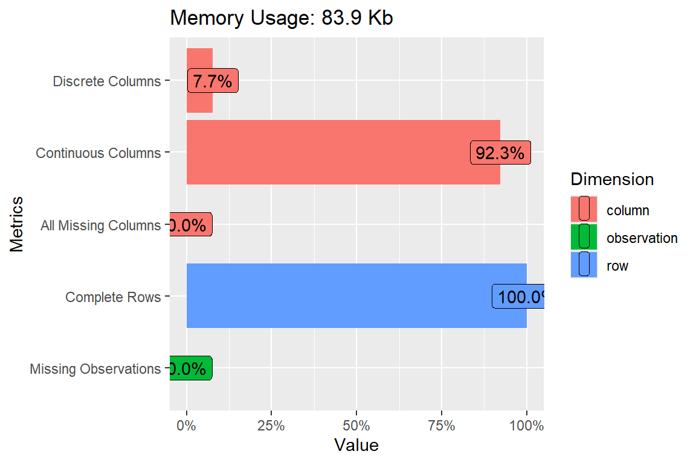
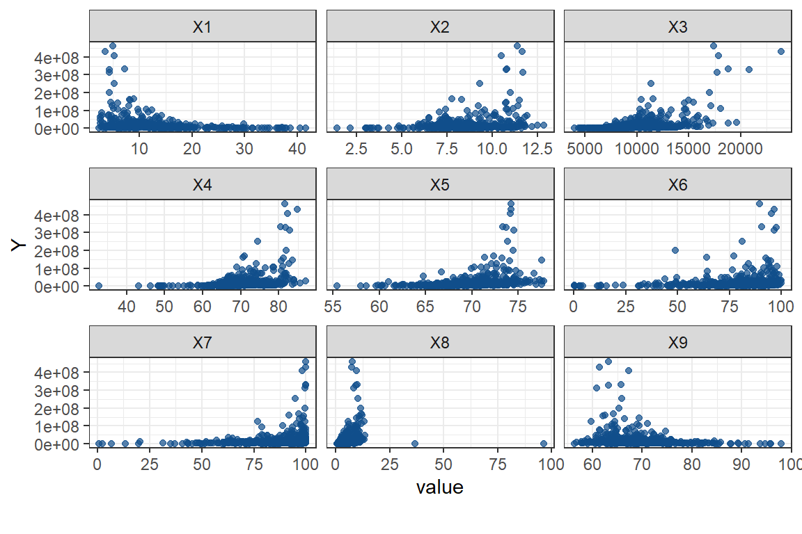
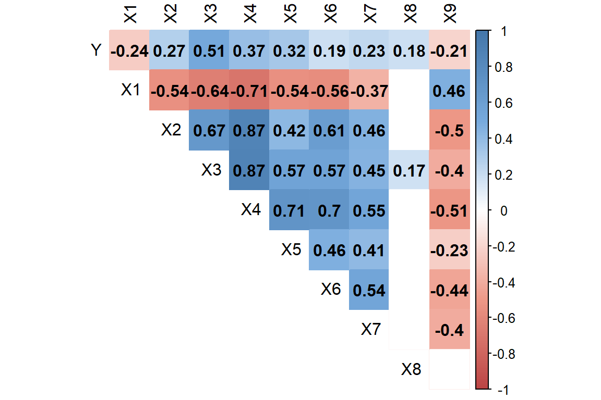
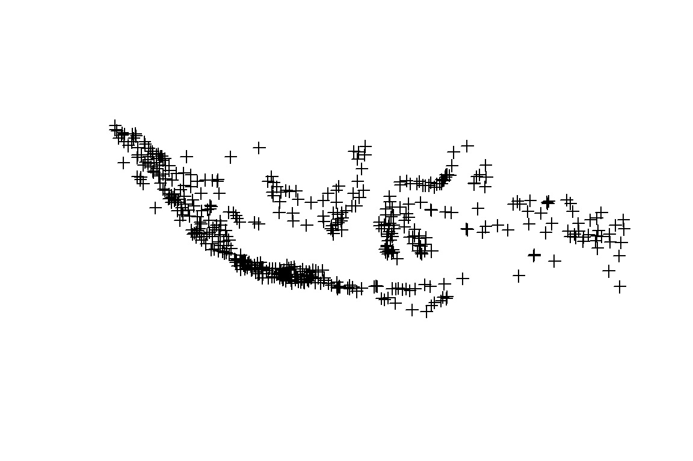
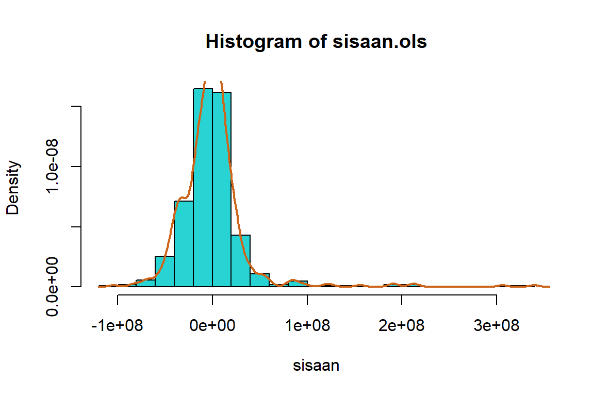
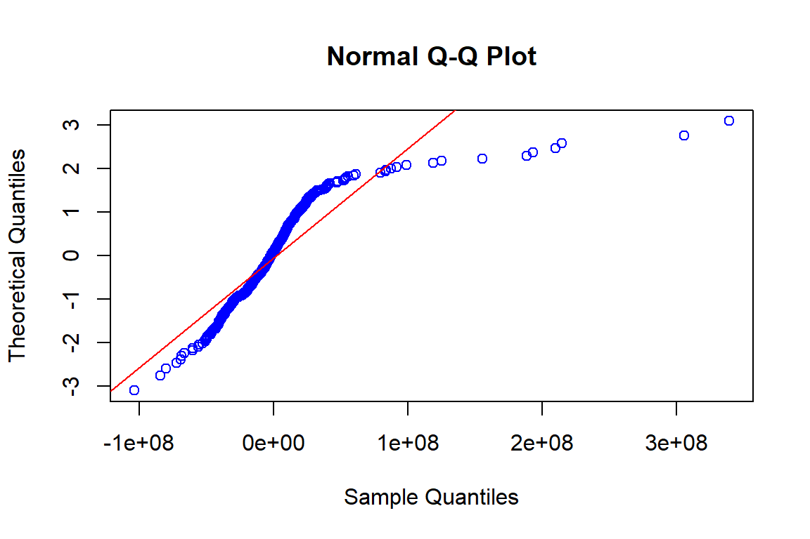
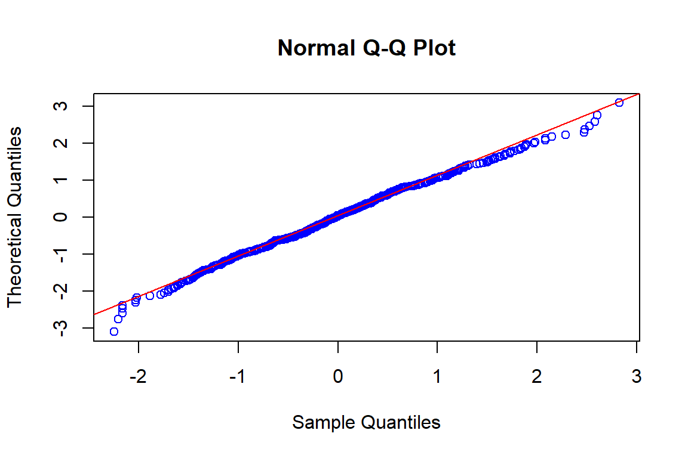
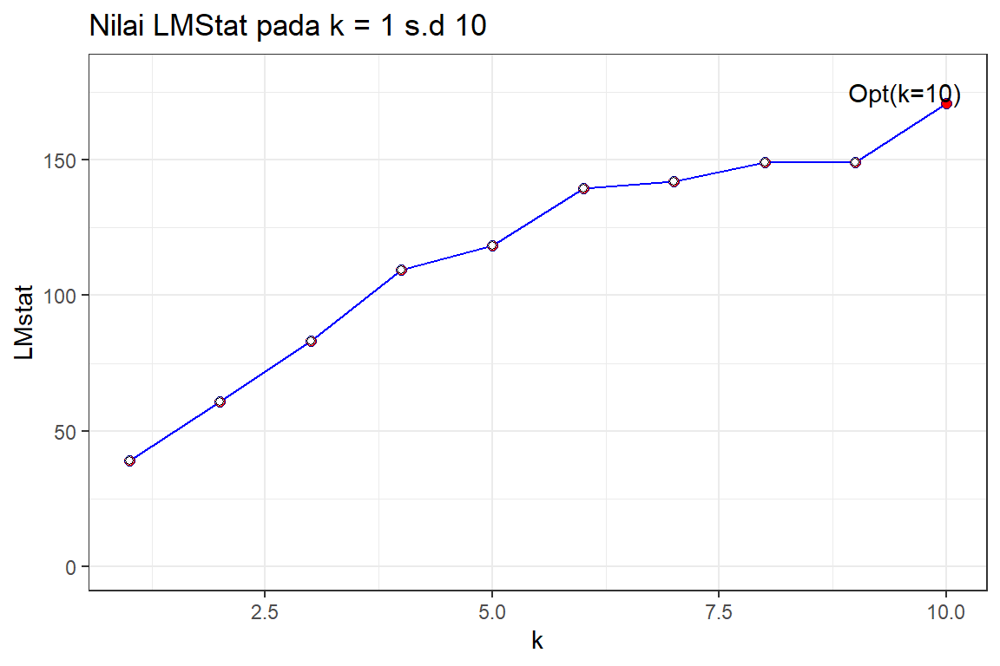

library(dplyr)
#
# Attaching package: 'dplyr'
# The following objects are masked from 'package:stats':
#
# filter, lag
# The following objects are masked from 'package:base':
#
# intersect, setdiff, setequal, union
library(tidyverse)
# ── Attaching packages
# ─────────────────────────── tidyverse
# 1.3.2 ──
# ✔ ggplot2 3.4.0 ✔ purrr 1.0.2
# ✔ tibble 3.1.8 ✔ stringr 1.5.0
# ✔ tidyr 1.3.0 ✔ forcats 0.5.2
# ✔ readr 2.1.2
# Warning: package 'ggplot2' was built under R version 4.2.2
# Warning: package 'tidyr' was built under R version 4.2.3
# Warning: package 'purrr' was built under R version 4.2.3
# Warning: package 'stringr' was built under R version 4.2.3
# Warning: package 'forcats' was built under R version 4.2.2
# ── Conflicts ────────────────────────────── tidyverse_conflicts() ──
# ✖ dplyr::filter() masks stats::filter()
# ✖ dplyr::lag() masks stats::lag()
library(spdep)
# Warning: package 'spdep' was built under R version 4.2.3
# Loading required package: spData
# To access larger datasets in this package, install the
# spDataLarge package with: `install.packages('spDataLarge',
# repos='https://nowosad.github.io/drat/', type='source')`
# Loading required package: sf
# Linking to GEOS 3.9.1, GDAL 3.4.3, PROJ 7.2.1; sf_use_s2() is TRUE
library(spData)
library(spgwr)
# Warning: package 'spgwr' was built under R version 4.2.3
# Loading required package: sp
# NOTE: This package does not constitute approval of GWR
# as a method of spatial analysis; see example(gwr)
library(mgwrsar)
# Warning: package 'mgwrsar' was built under R version 4.2.3
# Loading required package: Rcpp
# Warning: package 'Rcpp' was built under R version 4.2.3
# Loading required package: leaflet
# Loading required package: Matrix
#
# Attaching package: 'Matrix'
#
# The following objects are masked from 'package:tidyr':
#
# expand, pack, unpack
library(rgdal)
# Please note that rgdal will be retired by the end of 2023,
# plan transition to sf/stars/terra functions using GDAL and PROJ
# at your earliest convenience.
#
# rgdal: version: 1.5-32, (SVN revision 1176)
# Geospatial Data Abstraction Library extensions to R successfully loaded
# Loaded GDAL runtime: GDAL 3.4.3, released 2022/04/22
# Path to GDAL shared files: C:/Users/anugraha/AppData/Local/R/win-library/4.2/rgdal/gdal
# GDAL binary built with GEOS: TRUE
# Loaded PROJ runtime: Rel. 7.2.1, January 1st, 2021, [PJ_VERSION: 721]
# Path to PROJ shared files: D:\My_Development\pgsql13\share\contrib\postgis-3.1\proj
# PROJ CDN enabled: FALSE
# Linking to sp version:1.5-0
# To mute warnings of possible GDAL/OSR exportToProj4() degradation,
# use options("rgdal_show_exportToProj4_warnings"="none") before loading sp or rgdal.
library(raster)
# Warning: package 'raster' was built under R version 4.2.3
#
# Attaching package: 'raster'
#
# The following object is masked from 'package:dplyr':
#
# select
library(DataExplorer)
library(tigris)
# To enable caching of data, set `options(tigris_use_cache = TRUE)`
# in your R script or .Rprofile.
library(sf)
library(Rcpp)
library(ggplot2)
library(corrplot)
# corrplot 0.92 loaded
library(writexl)
# Warning: package 'writexl' was built under R version 4.2.3
library(nortest)
library(car)
# Loading required package: carData
#
# Attaching package: 'car'
#
# The following object is masked from 'package:purrr':
#
# some
#
# The following object is masked from 'package:dplyr':
#
# recode
library(DescTools)
# Warning: package 'DescTools' was built under R version 4.2.2
#
# Attaching package: 'DescTools'
#
# The following object is masked from 'package:car':
#
# Recode
library(lmtest)
# Loading required package: zoo
# Warning: package 'zoo' was built under R version 4.2.3
#
# Attaching package: 'zoo'
#
# The following objects are masked from 'package:base':
#
# as.Date, as.Date.numeric
library(tseries)
# Warning: package 'tseries' was built under R version 4.2.3
# Registered S3 method overwritten by 'quantmod':
# method from
# as.zoo.data.frame zoo9 Tahapan Analisis dengan R
9.1 Package
9.2 Load Data
pdrb <- read.csv("data/pdrb.csv", sep = ";")
glimpse(pdrb)
# Rows: 514
# Columns: 13
# $ Nama.Wilayah <chr> "Simeulue", "Aceh Singkil", "Aceh Selatan", "…
# $ latitude <dbl> 2.58, 2.36, 3.31, 3.31, 5.26, 4.45, 4.45, 5.4…
# $ longitude <dbl> 96.1, 97.9, 97.4, 97.7, 96.0, 96.8, 96.2, 95.…
# $ Y <int> 1648096, 1780419, 4345784, 3487157, 8433526, …
# $ X1 <dbl> 18.98, 20.36, 13.18, 13.41, 14.45, 15.26, 18.…
# $ X2 <dbl> 9.48, 8.68, 8.88, 9.67, 8.21, 9.86, 9.55, 10.…
# $ X3 <int> 7148, 8776, 8180, 8030, 8577, 10780, 9593, 96…
# $ X4 <dbl> 66.4, 69.2, 67.4, 69.4, 67.8, 73.4, 71.7, 73.…
# $ X5 <dbl> 65.3, 67.4, 64.4, 68.2, 68.7, 68.9, 68.0, 69.…
# $ X6 <dbl> 71.6, 69.6, 62.5, 62.7, 66.8, 90.6, 89.6, 87.…
# $ X7 <dbl> 87.5, 78.6, 79.7, 86.7, 83.2, 90.1, 94.2, 82.…
# $ X8 <dbl> 5.71, 8.36, 6.46, 6.43, 7.13, 2.61, 7.09, 7.7…
# $ X9 <dbl> 71.2, 62.9, 60.9, 69.6, 59.5, 76.3, 60.0, 61.…9.3 Eksplorasi Data
pdrb %>% as.data.frame %>%
ggplot(aes(longitude, latitude)) + geom_point(aes(size=Y), color="blue", alpha=0.6) +
ggtitle("Sebaran PDRB Kabupaten Kota di Indonesia Tahun 2021") + coord_equal() + theme_bw()plot_intro(data = pdrb)
# Plot
datagwr <- pdrb[4:13]
glimpse(datagwr)
# Rows: 514
# Columns: 10
# $ Y <int> 1648096, 1780419, 4345784, 3487157, 8433526, 5953118, 7…
# $ X1 <dbl> 18.98, 20.36, 13.18, 13.41, 14.45, 15.26, 18.81, 14.05,…
# $ X2 <dbl> 9.48, 8.68, 8.88, 9.67, 8.21, 9.86, 9.55, 10.33, 9.00, …
# $ X3 <int> 7148, 8776, 8180, 8030, 8577, 10780, 9593, 9644, 9860, …
# $ X4 <dbl> 66.4, 69.2, 67.4, 69.4, 67.8, 73.4, 71.7, 73.6, 70.7, 7…
# $ X5 <dbl> 65.3, 67.4, 64.4, 68.2, 68.7, 68.9, 68.0, 69.8, 67.0, 7…
# $ X6 <dbl> 71.6, 69.6, 62.5, 62.7, 66.8, 90.6, 89.6, 87.4, 54.1, 8…
# $ X7 <dbl> 87.5, 78.6, 79.7, 86.7, 83.2, 90.1, 94.2, 82.4, 89.2, 9…
# $ X8 <dbl> 5.71, 8.36, 6.46, 6.43, 7.13, 2.61, 7.09, 7.70, 7.28, 4…
# $ X9 <dbl> 71.2, 62.9, 60.9, 69.6, 59.5, 76.3, 60.0, 61.7, 60.3, 6…
#Plot hubungan
plot_scatterplot( datagwr, by = 'Y',
ggtheme = theme_bw(),
geom_point_args = list("color" = alpha("dodgerblue4", 0.7)))
summary(datagwr)
# Y X1 X2 X3
# Min. :1.47e+05 Min. : 2.4 Min. : 1.42 Min. : 3976
# 1st Qu.:3.65e+06 1st Qu.: 7.2 1st Qu.: 7.51 1st Qu.: 8574
# Median :8.81e+06 Median :10.5 Median : 8.30 Median :10196
# Mean :2.20e+07 Mean :12.3 Mean : 8.44 Mean :10325
# 3rd Qu.:1.97e+07 3rd Qu.:14.9 3rd Qu.: 9.34 3rd Qu.:11719
# Max. :4.60e+08 Max. :41.7 Max. :12.83 Max. :23888
# X4 X5 X6 X7
# Min. :32.8 Min. :55.4 Min. : 0.3 Min. : 0.9
# 1st Qu.:66.6 1st Qu.:67.4 1st Qu.: 70.2 1st Qu.: 79.0
# Median :69.6 Median :70.0 Median : 81.8 Median : 89.8
# Mean :69.9 Mean :69.7 Mean : 77.2 Mean : 85.1
# 3rd Qu.:73.1 3rd Qu.:72.0 3rd Qu.: 89.9 3rd Qu.: 96.4
# Max. :87.2 Max. :77.7 Max. :100.0 Max. :100.0
# X8 X9
# Min. : 0.4 Min. :56.4
# 1st Qu.: 3.2 1st Qu.:65.1
# Median : 4.6 Median :69.0
# Mean : 5.3 Mean :69.5
# 3rd Qu.: 6.6 3rd Qu.:72.3
# Max. :96.2 Max. :97.99.4 Korelasi
#nilai p value dari korelasi antar peubah Y dan X
p.mat <- cor.mtest(datagwr)
head(p.mat$p)
# Y X1 X2 X3 X4 X5
# Y 0.00e+00 2.95e-08 4.04e-10 7.90e-36 2.61e-18 5.12e-14
# X1 2.95e-08 0.00e+00 6.52e-41 1.33e-61 4.13e-79 2.47e-40
# X2 4.04e-10 6.52e-41 0.00e+00 6.12e-68 2.04e-158 6.22e-23
# X3 7.90e-36 1.33e-61 6.12e-68 0.00e+00 1.38e-160 5.08e-45
# X4 2.61e-18 4.13e-79 2.04e-158 1.38e-160 0.00e+00 4.37e-79
# X5 5.12e-14 2.47e-40 6.22e-23 5.08e-45 4.37e-79 0.00e+00
# X6 X7 X8 X9
# Y 2.06e-05 2.13e-07 2.45e-05 1.58e-06
# X1 3.65e-44 2.01e-18 4.24e-01 1.38e-28
# X2 3.04e-54 4.15e-28 1.20e-01 6.57e-34
# X3 2.73e-45 1.56e-26 8.91e-05 2.37e-21
# X4 6.76e-76 5.94e-42 3.15e-01 7.46e-36
# X5 8.04e-29 5.42e-22 2.46e-01 1.00e-07
#plot korelasi
col2 <- colorRampPalette(c("#BB4444", "#EE9988", "#FFFFFF", "#77AADD", "#4477AA"))
corrplot(cor(pdrb[,4:13]), method="color", col=col2(200),
type="upper",
addCoef.col = "black",
tl.col="black",
p.mat = p.mat$p, sig.level = 0.05, insig = "blank",
diag=FALSE
)
Peubah yang memiliki korelasi positif taraf sedang yaitu X1 dan X5 sedangkan X2 dan X5 memiliki korelasi negatif taraf sedang
Pada peubah X2 dengan X4, dan X3 dengan X4 terlihat korelasi yang cukup tinggi yaitu sebesar 0.87. Hal ini mengindikasikan adanya multikolinearitas.
9.5 Matriks Bobot
Matriks Pembobot berdasarkan jarak
pdrb1 <- pdrb
coordinates(pdrb1) <- ~longitude+latitude
plot(pdrb1)
#menghitung matriks jarak
longlat <- coordinates(pdrb1)
jarak<-as.matrix((dist(longlat)))K-Nearest Neighbour
# k=5, 5 tetangga terdekat
W.knn<-knn2nb(knearneigh(longlat,k=5,longlat=TRUE))
W.knn
# Neighbour list object:
# Number of regions: 514
# Number of nonzero links: 2570
# Percentage nonzero weights: 0.973
# Average number of links: 5
# 3 disjoint connected subgraphs
# Non-symmetric neighbours listW.knn1 <- nb2listw(W.knn,style='W')
W.knn1
# Characteristics of weights list object:
# Neighbour list object:
# Number of regions: 514
# Number of nonzero links: 2570
# Percentage nonzero weights: 0.973
# Average number of links: 5
# 3 disjoint connected subgraphs
# Non-symmetric neighbours list
#
# Weights style: W
# Weights constants summary:
# n nn S0 S1 S2
# W 514 264196 514 182 2126Inverse Distance Weight
#Alpha = 1
alpha1=1
W.idw <-1/(jarak^alpha1)
class(W.idw)
# [1] "matrix" "array"#normalisasi matriks jarak
diag(W.idw)<-0
rtot<-rowSums(W.idw,na.rm=TRUE)
W.idw.sd<-W.idw/rtot #row-normalized
rowSums(W.idw.sd,na.rm=TRUE)
# 1 2 3 4 5 6 7 8 9 10 11 12 13 14 15 16 17
# 1 1 1 1 1 1 1 1 1 1 1 1 1 1 1 1 1
# 18 19 20 21 22 23 24 25 26 27 28 29 30 31 32 33 34
# 1 1 1 1 1 1 1 1 1 1 1 1 1 1 1 1 1
# 35 36 37 38 39 40 41 42 43 44 45 46 47 48 49 50 51
# 1 1 1 1 1 1 1 1 1 1 1 1 1 1 1 1 1
# 52 53 54 55 56 57 58 59 60 61 62 63 64 65 66 67 68
# 1 1 1 1 1 1 1 1 1 1 1 1 1 1 1 1 1
# 69 70 71 72 73 74 75 76 77 78 79 80 81 82 83 84 85
# 1 1 1 1 1 1 1 1 1 1 1 1 1 1 1 1 1
# 86 87 88 89 90 91 92 93 94 95 96 97 98 99 100 101 102
# 1 1 1 1 1 1 1 1 1 1 1 1 1 1 1 1 1
# 103 104 105 106 107 108 109 110 111 112 113 114 115 116 117 118 119
# 1 1 1 1 1 1 1 1 1 1 1 1 1 1 1 1 1
# 120 121 122 123 124 125 126 127 128 129 130 131 132 133 134 135 136
# 1 1 1 1 1 1 1 1 1 1 1 1 1 1 1 1 1
# 137 138 139 140 141 142 143 144 145 146 147 148 149 150 151 152 153
# 1 1 1 1 1 1 1 1 1 1 1 1 1 1 1 1 1
# 154 155 156 157 158 159 160 161 162 163 164 165 166 167 168 169 170
# 1 1 1 1 1 1 1 1 1 1 1 1 1 1 1 1 1
# 171 172 173 174 175 176 177 178 179 180 181 182 183 184 185 186 187
# 1 1 1 1 1 1 1 1 1 1 1 1 1 1 1 1 1
# 188 189 190 191 192 193 194 195 196 197 198 199 200 201 202 203 204
# 1 1 1 1 1 1 1 1 1 1 1 1 1 1 1 1 1
# 205 206 207 208 209 210 211 212 213 214 215 216 217 218 219 220 221
# 1 1 1 1 1 1 1 1 1 1 1 1 1 1 1 1 1
# 222 223 224 225 226 227 228 229 230 231 232 233 234 235 236 237 238
# 1 1 1 1 1 1 1 1 1 1 1 1 1 1 1 1 1
# 239 240 241 242 243 244 245 246 247 248 249 250 251 252 253 254 255
# 1 1 1 1 1 1 1 1 1 1 1 1 1 1 1 1 1
# 256 257 258 259 260 261 262 263 264 265 266 267 268 269 270 271 272
# 1 1 1 1 1 1 1 1 1 1 1 1 1 1 1 1 1
# 273 274 275 276 277 278 279 280 281 282 283 284 285 286 287 288 289
# 1 1 1 1 1 1 1 1 1 1 1 1 1 1 1 1 1
# 290 291 292 293 294 295 296 297 298 299 300 301 302 303 304 305 306
# 1 1 1 1 1 1 1 1 1 1 1 1 1 1 1 1 1
# 307 308 309 310 311 312 313 314 315 316 317 318 319 320 321 322 323
# 1 1 1 1 1 1 1 1 1 1 1 1 1 1 1 1 1
# 324 325 326 327 328 329 330 331 332 333 334 335 336 337 338 339 340
# 1 1 1 1 1 1 1 1 1 1 1 1 1 1 1 1 1
# 341 342 343 344 345 346 347 348 349 350 351 352 353 354 355 356 357
# 1 1 1 1 1 1 1 1 1 1 1 1 1 1 1 1 1
# 358 359 360 361 362 363 364 365 366 367 368 369 370 371 372 373 374
# 1 1 1 1 1 1 1 1 1 1 1 1 1 1 1 1 1
# 375 376 377 378 379 380 381 382 383 384 385 386 387 388 389 390 391
# 1 1 1 1 1 1 1 1 1 1 1 1 1 1 1 1 1
# 392 393 394 395 396 397 398 399 400 401 402 403 404 405 406 407 408
# 1 1 1 1 1 1 1 1 1 1 1 1 1 1 1 1 1
# 409 410 411 412 413 414 415 416 417 418 419 420 421 422 423 424 425
# 1 1 1 1 1 1 1 1 1 1 1 1 1 1 1 1 1
# 426 427 428 429 430 431 432 433 434 435 436 437 438 439 440 441 442
# 1 1 1 1 1 1 1 1 1 1 1 1 1 1 1 1 1
# 443 444 445 446 447 448 449 450 451 452 453 454 455 456 457 458 459
# 1 1 1 1 1 1 1 1 1 1 1 1 1 1 1 1 1
# 460 461 462 463 464 465 466 467 468 469 470 471 472 473 474 475 476
# 1 1 1 1 1 1 1 1 1 1 1 1 1 1 1 1 1
# 477 478 479 480 481 482 483 484 485 486 487 488 489 490 491 492 493
# 1 1 1 1 1 1 1 1 1 1 1 1 1 1 1 1 1
# 494 495 496 497 498 499 500 501 502 503 504 505 506 507 508 509 510
# 1 1 1 1 1 1 1 1 1 1 1 1 1 1 1 1 1
# 511 512 513 514
# 1 1 1 1W.idw.1 = mat2listw(W.idw.sd,style='W')
summary(W.idw.1)
# Characteristics of weights list object:
# Neighbour list object:
# Number of regions: 514
# Number of nonzero links: 263682
# Percentage nonzero weights: 99.8
# Average number of links: 513
# Link number distribution:
#
# 513
# 514
# 514 least connected regions:
# 1 2 3 4 5 6 7 8 9 10 11 12 13 14 15 16 17 18 19 20 21 22 23 24 25 26 27 28 29 30 31 32 33 34 35 36 37 38 39 40 41 42 43 44 45 46 47 48 49 50 51 52 53 54 55 56 57 58 59 60 61 62 63 64 65 66 67 68 69 70 71 72 73 74 75 76 77 78 79 80 81 82 83 84 85 86 87 88 89 90 91 92 93 94 95 96 97 98 99 100 101 102 103 104 105 106 107 108 109 110 111 112 113 114 115 116 117 118 119 120 121 122 123 124 125 126 127 128 129 130 131 132 133 134 135 136 137 138 139 140 141 142 143 144 145 146 147 148 149 150 151 152 153 154 155 156 157 158 159 160 161 162 163 164 165 166 167 168 169 170 171 172 173 174 175 176 177 178 179 180 181 182 183 184 185 186 187 188 189 190 191 192 193 194 195 196 197 198 199 200 201 202 203 204 205 206 207 208 209 210 211 212 213 214 215 216 217 218 219 220 221 222 223 224 225 226 227 228 229 230 231 232 233 234 235 236 237 238 239 240 241 242 243 244 245 246 247 248 249 250 251 252 253 254 255 256 257 258 259 260 261 262 263 264 265 266 267 268 269 270 271 272 273 274 275 276 277 278 279 280 281 282 283 284 285 286 287 288 289 290 291 292 293 294 295 296 297 298 299 300 301 302 303 304 305 306 307 308 309 310 311 312 313 314 315 316 317 318 319 320 321 322 323 324 325 326 327 328 329 330 331 332 333 334 335 336 337 338 339 340 341 342 343 344 345 346 347 348 349 350 351 352 353 354 355 356 357 358 359 360 361 362 363 364 365 366 367 368 369 370 371 372 373 374 375 376 377 378 379 380 381 382 383 384 385 386 387 388 389 390 391 392 393 394 395 396 397 398 399 400 401 402 403 404 405 406 407 408 409 410 411 412 413 414 415 416 417 418 419 420 421 422 423 424 425 426 427 428 429 430 431 432 433 434 435 436 437 438 439 440 441 442 443 444 445 446 447 448 449 450 451 452 453 454 455 456 457 458 459 460 461 462 463 464 465 466 467 468 469 470 471 472 473 474 475 476 477 478 479 480 481 482 483 484 485 486 487 488 489 490 491 492 493 494 495 496 497 498 499 500 501 502 503 504 505 506 507 508 509 510 511 512 513 514 with 513 links
# 514 most connected regions:
# 1 2 3 4 5 6 7 8 9 10 11 12 13 14 15 16 17 18 19 20 21 22 23 24 25 26 27 28 29 30 31 32 33 34 35 36 37 38 39 40 41 42 43 44 45 46 47 48 49 50 51 52 53 54 55 56 57 58 59 60 61 62 63 64 65 66 67 68 69 70 71 72 73 74 75 76 77 78 79 80 81 82 83 84 85 86 87 88 89 90 91 92 93 94 95 96 97 98 99 100 101 102 103 104 105 106 107 108 109 110 111 112 113 114 115 116 117 118 119 120 121 122 123 124 125 126 127 128 129 130 131 132 133 134 135 136 137 138 139 140 141 142 143 144 145 146 147 148 149 150 151 152 153 154 155 156 157 158 159 160 161 162 163 164 165 166 167 168 169 170 171 172 173 174 175 176 177 178 179 180 181 182 183 184 185 186 187 188 189 190 191 192 193 194 195 196 197 198 199 200 201 202 203 204 205 206 207 208 209 210 211 212 213 214 215 216 217 218 219 220 221 222 223 224 225 226 227 228 229 230 231 232 233 234 235 236 237 238 239 240 241 242 243 244 245 246 247 248 249 250 251 252 253 254 255 256 257 258 259 260 261 262 263 264 265 266 267 268 269 270 271 272 273 274 275 276 277 278 279 280 281 282 283 284 285 286 287 288 289 290 291 292 293 294 295 296 297 298 299 300 301 302 303 304 305 306 307 308 309 310 311 312 313 314 315 316 317 318 319 320 321 322 323 324 325 326 327 328 329 330 331 332 333 334 335 336 337 338 339 340 341 342 343 344 345 346 347 348 349 350 351 352 353 354 355 356 357 358 359 360 361 362 363 364 365 366 367 368 369 370 371 372 373 374 375 376 377 378 379 380 381 382 383 384 385 386 387 388 389 390 391 392 393 394 395 396 397 398 399 400 401 402 403 404 405 406 407 408 409 410 411 412 413 414 415 416 417 418 419 420 421 422 423 424 425 426 427 428 429 430 431 432 433 434 435 436 437 438 439 440 441 442 443 444 445 446 447 448 449 450 451 452 453 454 455 456 457 458 459 460 461 462 463 464 465 466 467 468 469 470 471 472 473 474 475 476 477 478 479 480 481 482 483 484 485 486 487 488 489 490 491 492 493 494 495 496 497 498 499 500 501 502 503 504 505 506 507 508 509 510 511 512 513 514 with 513 links
#
# Weights style: W
# Weights constants summary:
# n nn S0 S1 S2
# W 514 264196 514 20 2080#Alpha = 2
alpha2 = 2
W.idw2 <- 1/(jarak^alpha2)
#normalisasi baris
diag(W.idw2) <- 0
rtot <- rowSums(W.idw2,na.rm=TRUE)
W.idw.sd2 <- W.idw2/rtot #row-normalized
rowSums(W.idw.sd2,na.rm=TRUE)
# 1 2 3 4 5 6 7 8 9 10 11 12 13 14 15 16 17
# 1 1 1 1 1 1 1 1 1 1 1 1 1 1 1 1 1
# 18 19 20 21 22 23 24 25 26 27 28 29 30 31 32 33 34
# 1 1 1 1 1 1 1 1 1 1 1 1 1 1 1 1 1
# 35 36 37 38 39 40 41 42 43 44 45 46 47 48 49 50 51
# 1 1 1 1 1 1 1 1 1 1 1 1 1 1 1 1 1
# 52 53 54 55 56 57 58 59 60 61 62 63 64 65 66 67 68
# 1 1 1 1 1 1 1 1 1 1 1 1 1 1 1 1 1
# 69 70 71 72 73 74 75 76 77 78 79 80 81 82 83 84 85
# 1 1 1 1 1 1 1 1 1 1 1 1 1 1 1 1 1
# 86 87 88 89 90 91 92 93 94 95 96 97 98 99 100 101 102
# 1 1 1 1 1 1 1 1 1 1 1 1 1 1 1 1 1
# 103 104 105 106 107 108 109 110 111 112 113 114 115 116 117 118 119
# 1 1 1 1 1 1 1 1 1 1 1 1 1 1 1 1 1
# 120 121 122 123 124 125 126 127 128 129 130 131 132 133 134 135 136
# 1 1 1 1 1 1 1 1 1 1 1 1 1 1 1 1 1
# 137 138 139 140 141 142 143 144 145 146 147 148 149 150 151 152 153
# 1 1 1 1 1 1 1 1 1 1 1 1 1 1 1 1 1
# 154 155 156 157 158 159 160 161 162 163 164 165 166 167 168 169 170
# 1 1 1 1 1 1 1 1 1 1 1 1 1 1 1 1 1
# 171 172 173 174 175 176 177 178 179 180 181 182 183 184 185 186 187
# 1 1 1 1 1 1 1 1 1 1 1 1 1 1 1 1 1
# 188 189 190 191 192 193 194 195 196 197 198 199 200 201 202 203 204
# 1 1 1 1 1 1 1 1 1 1 1 1 1 1 1 1 1
# 205 206 207 208 209 210 211 212 213 214 215 216 217 218 219 220 221
# 1 1 1 1 1 1 1 1 1 1 1 1 1 1 1 1 1
# 222 223 224 225 226 227 228 229 230 231 232 233 234 235 236 237 238
# 1 1 1 1 1 1 1 1 1 1 1 1 1 1 1 1 1
# 239 240 241 242 243 244 245 246 247 248 249 250 251 252 253 254 255
# 1 1 1 1 1 1 1 1 1 1 1 1 1 1 1 1 1
# 256 257 258 259 260 261 262 263 264 265 266 267 268 269 270 271 272
# 1 1 1 1 1 1 1 1 1 1 1 1 1 1 1 1 1
# 273 274 275 276 277 278 279 280 281 282 283 284 285 286 287 288 289
# 1 1 1 1 1 1 1 1 1 1 1 1 1 1 1 1 1
# 290 291 292 293 294 295 296 297 298 299 300 301 302 303 304 305 306
# 1 1 1 1 1 1 1 1 1 1 1 1 1 1 1 1 1
# 307 308 309 310 311 312 313 314 315 316 317 318 319 320 321 322 323
# 1 1 1 1 1 1 1 1 1 1 1 1 1 1 1 1 1
# 324 325 326 327 328 329 330 331 332 333 334 335 336 337 338 339 340
# 1 1 1 1 1 1 1 1 1 1 1 1 1 1 1 1 1
# 341 342 343 344 345 346 347 348 349 350 351 352 353 354 355 356 357
# 1 1 1 1 1 1 1 1 1 1 1 1 1 1 1 1 1
# 358 359 360 361 362 363 364 365 366 367 368 369 370 371 372 373 374
# 1 1 1 1 1 1 1 1 1 1 1 1 1 1 1 1 1
# 375 376 377 378 379 380 381 382 383 384 385 386 387 388 389 390 391
# 1 1 1 1 1 1 1 1 1 1 1 1 1 1 1 1 1
# 392 393 394 395 396 397 398 399 400 401 402 403 404 405 406 407 408
# 1 1 1 1 1 1 1 1 1 1 1 1 1 1 1 1 1
# 409 410 411 412 413 414 415 416 417 418 419 420 421 422 423 424 425
# 1 1 1 1 1 1 1 1 1 1 1 1 1 1 1 1 1
# 426 427 428 429 430 431 432 433 434 435 436 437 438 439 440 441 442
# 1 1 1 1 1 1 1 1 1 1 1 1 1 1 1 1 1
# 443 444 445 446 447 448 449 450 451 452 453 454 455 456 457 458 459
# 1 1 1 1 1 1 1 1 1 1 1 1 1 1 1 1 1
# 460 461 462 463 464 465 466 467 468 469 470 471 472 473 474 475 476
# 1 1 1 1 1 1 1 1 1 1 1 1 1 1 1 1 1
# 477 478 479 480 481 482 483 484 485 486 487 488 489 490 491 492 493
# 1 1 1 1 1 1 1 1 1 1 1 1 1 1 1 1 1
# 494 495 496 497 498 499 500 501 502 503 504 505 506 507 508 509 510
# 1 1 1 1 1 1 1 1 1 1 1 1 1 1 1 1 1
# 511 512 513 514
# 1 1 1 1
W.idw.22 = mat2listw(W.idw.sd2,style='W')
summary(W.idw.22)
# Characteristics of weights list object:
# Neighbour list object:
# Number of regions: 514
# Number of nonzero links: 263682
# Percentage nonzero weights: 99.8
# Average number of links: 513
# Link number distribution:
#
# 513
# 514
# 514 least connected regions:
# 1 2 3 4 5 6 7 8 9 10 11 12 13 14 15 16 17 18 19 20 21 22 23 24 25 26 27 28 29 30 31 32 33 34 35 36 37 38 39 40 41 42 43 44 45 46 47 48 49 50 51 52 53 54 55 56 57 58 59 60 61 62 63 64 65 66 67 68 69 70 71 72 73 74 75 76 77 78 79 80 81 82 83 84 85 86 87 88 89 90 91 92 93 94 95 96 97 98 99 100 101 102 103 104 105 106 107 108 109 110 111 112 113 114 115 116 117 118 119 120 121 122 123 124 125 126 127 128 129 130 131 132 133 134 135 136 137 138 139 140 141 142 143 144 145 146 147 148 149 150 151 152 153 154 155 156 157 158 159 160 161 162 163 164 165 166 167 168 169 170 171 172 173 174 175 176 177 178 179 180 181 182 183 184 185 186 187 188 189 190 191 192 193 194 195 196 197 198 199 200 201 202 203 204 205 206 207 208 209 210 211 212 213 214 215 216 217 218 219 220 221 222 223 224 225 226 227 228 229 230 231 232 233 234 235 236 237 238 239 240 241 242 243 244 245 246 247 248 249 250 251 252 253 254 255 256 257 258 259 260 261 262 263 264 265 266 267 268 269 270 271 272 273 274 275 276 277 278 279 280 281 282 283 284 285 286 287 288 289 290 291 292 293 294 295 296 297 298 299 300 301 302 303 304 305 306 307 308 309 310 311 312 313 314 315 316 317 318 319 320 321 322 323 324 325 326 327 328 329 330 331 332 333 334 335 336 337 338 339 340 341 342 343 344 345 346 347 348 349 350 351 352 353 354 355 356 357 358 359 360 361 362 363 364 365 366 367 368 369 370 371 372 373 374 375 376 377 378 379 380 381 382 383 384 385 386 387 388 389 390 391 392 393 394 395 396 397 398 399 400 401 402 403 404 405 406 407 408 409 410 411 412 413 414 415 416 417 418 419 420 421 422 423 424 425 426 427 428 429 430 431 432 433 434 435 436 437 438 439 440 441 442 443 444 445 446 447 448 449 450 451 452 453 454 455 456 457 458 459 460 461 462 463 464 465 466 467 468 469 470 471 472 473 474 475 476 477 478 479 480 481 482 483 484 485 486 487 488 489 490 491 492 493 494 495 496 497 498 499 500 501 502 503 504 505 506 507 508 509 510 511 512 513 514 with 513 links
# 514 most connected regions:
# 1 2 3 4 5 6 7 8 9 10 11 12 13 14 15 16 17 18 19 20 21 22 23 24 25 26 27 28 29 30 31 32 33 34 35 36 37 38 39 40 41 42 43 44 45 46 47 48 49 50 51 52 53 54 55 56 57 58 59 60 61 62 63 64 65 66 67 68 69 70 71 72 73 74 75 76 77 78 79 80 81 82 83 84 85 86 87 88 89 90 91 92 93 94 95 96 97 98 99 100 101 102 103 104 105 106 107 108 109 110 111 112 113 114 115 116 117 118 119 120 121 122 123 124 125 126 127 128 129 130 131 132 133 134 135 136 137 138 139 140 141 142 143 144 145 146 147 148 149 150 151 152 153 154 155 156 157 158 159 160 161 162 163 164 165 166 167 168 169 170 171 172 173 174 175 176 177 178 179 180 181 182 183 184 185 186 187 188 189 190 191 192 193 194 195 196 197 198 199 200 201 202 203 204 205 206 207 208 209 210 211 212 213 214 215 216 217 218 219 220 221 222 223 224 225 226 227 228 229 230 231 232 233 234 235 236 237 238 239 240 241 242 243 244 245 246 247 248 249 250 251 252 253 254 255 256 257 258 259 260 261 262 263 264 265 266 267 268 269 270 271 272 273 274 275 276 277 278 279 280 281 282 283 284 285 286 287 288 289 290 291 292 293 294 295 296 297 298 299 300 301 302 303 304 305 306 307 308 309 310 311 312 313 314 315 316 317 318 319 320 321 322 323 324 325 326 327 328 329 330 331 332 333 334 335 336 337 338 339 340 341 342 343 344 345 346 347 348 349 350 351 352 353 354 355 356 357 358 359 360 361 362 363 364 365 366 367 368 369 370 371 372 373 374 375 376 377 378 379 380 381 382 383 384 385 386 387 388 389 390 391 392 393 394 395 396 397 398 399 400 401 402 403 404 405 406 407 408 409 410 411 412 413 414 415 416 417 418 419 420 421 422 423 424 425 426 427 428 429 430 431 432 433 434 435 436 437 438 439 440 441 442 443 444 445 446 447 448 449 450 451 452 453 454 455 456 457 458 459 460 461 462 463 464 465 466 467 468 469 470 471 472 473 474 475 476 477 478 479 480 481 482 483 484 485 486 487 488 489 490 491 492 493 494 495 496 497 498 499 500 501 502 503 504 505 506 507 508 509 510 511 512 513 514 with 513 links
#
# Weights style: W
# Weights constants summary:
# n nn S0 S1 S2
# W 514 264196 514 163 2123Eksponensial Distance Weight
alpha=1
W.exp <-exp((-alpha)*jarak)
diag(W.exp) <- 0
rtot<-rowSums(W.exp,na.rm=TRUE)
W.e.sd<-W.exp/rtot #row-normalized
rowSums(W.e.sd,na.rm=TRUE)
# 1 2 3 4 5 6 7 8 9 10 11 12 13 14 15 16 17
# 1 1 1 1 1 1 1 1 1 1 1 1 1 1 1 1 1
# 18 19 20 21 22 23 24 25 26 27 28 29 30 31 32 33 34
# 1 1 1 1 1 1 1 1 1 1 1 1 1 1 1 1 1
# 35 36 37 38 39 40 41 42 43 44 45 46 47 48 49 50 51
# 1 1 1 1 1 1 1 1 1 1 1 1 1 1 1 1 1
# 52 53 54 55 56 57 58 59 60 61 62 63 64 65 66 67 68
# 1 1 1 1 1 1 1 1 1 1 1 1 1 1 1 1 1
# 69 70 71 72 73 74 75 76 77 78 79 80 81 82 83 84 85
# 1 1 1 1 1 1 1 1 1 1 1 1 1 1 1 1 1
# 86 87 88 89 90 91 92 93 94 95 96 97 98 99 100 101 102
# 1 1 1 1 1 1 1 1 1 1 1 1 1 1 1 1 1
# 103 104 105 106 107 108 109 110 111 112 113 114 115 116 117 118 119
# 1 1 1 1 1 1 1 1 1 1 1 1 1 1 1 1 1
# 120 121 122 123 124 125 126 127 128 129 130 131 132 133 134 135 136
# 1 1 1 1 1 1 1 1 1 1 1 1 1 1 1 1 1
# 137 138 139 140 141 142 143 144 145 146 147 148 149 150 151 152 153
# 1 1 1 1 1 1 1 1 1 1 1 1 1 1 1 1 1
# 154 155 156 157 158 159 160 161 162 163 164 165 166 167 168 169 170
# 1 1 1 1 1 1 1 1 1 1 1 1 1 1 1 1 1
# 171 172 173 174 175 176 177 178 179 180 181 182 183 184 185 186 187
# 1 1 1 1 1 1 1 1 1 1 1 1 1 1 1 1 1
# 188 189 190 191 192 193 194 195 196 197 198 199 200 201 202 203 204
# 1 1 1 1 1 1 1 1 1 1 1 1 1 1 1 1 1
# 205 206 207 208 209 210 211 212 213 214 215 216 217 218 219 220 221
# 1 1 1 1 1 1 1 1 1 1 1 1 1 1 1 1 1
# 222 223 224 225 226 227 228 229 230 231 232 233 234 235 236 237 238
# 1 1 1 1 1 1 1 1 1 1 1 1 1 1 1 1 1
# 239 240 241 242 243 244 245 246 247 248 249 250 251 252 253 254 255
# 1 1 1 1 1 1 1 1 1 1 1 1 1 1 1 1 1
# 256 257 258 259 260 261 262 263 264 265 266 267 268 269 270 271 272
# 1 1 1 1 1 1 1 1 1 1 1 1 1 1 1 1 1
# 273 274 275 276 277 278 279 280 281 282 283 284 285 286 287 288 289
# 1 1 1 1 1 1 1 1 1 1 1 1 1 1 1 1 1
# 290 291 292 293 294 295 296 297 298 299 300 301 302 303 304 305 306
# 1 1 1 1 1 1 1 1 1 1 1 1 1 1 1 1 1
# 307 308 309 310 311 312 313 314 315 316 317 318 319 320 321 322 323
# 1 1 1 1 1 1 1 1 1 1 1 1 1 1 1 1 1
# 324 325 326 327 328 329 330 331 332 333 334 335 336 337 338 339 340
# 1 1 1 1 1 1 1 1 1 1 1 1 1 1 1 1 1
# 341 342 343 344 345 346 347 348 349 350 351 352 353 354 355 356 357
# 1 1 1 1 1 1 1 1 1 1 1 1 1 1 1 1 1
# 358 359 360 361 362 363 364 365 366 367 368 369 370 371 372 373 374
# 1 1 1 1 1 1 1 1 1 1 1 1 1 1 1 1 1
# 375 376 377 378 379 380 381 382 383 384 385 386 387 388 389 390 391
# 1 1 1 1 1 1 1 1 1 1 1 1 1 1 1 1 1
# 392 393 394 395 396 397 398 399 400 401 402 403 404 405 406 407 408
# 1 1 1 1 1 1 1 1 1 1 1 1 1 1 1 1 1
# 409 410 411 412 413 414 415 416 417 418 419 420 421 422 423 424 425
# 1 1 1 1 1 1 1 1 1 1 1 1 1 1 1 1 1
# 426 427 428 429 430 431 432 433 434 435 436 437 438 439 440 441 442
# 1 1 1 1 1 1 1 1 1 1 1 1 1 1 1 1 1
# 443 444 445 446 447 448 449 450 451 452 453 454 455 456 457 458 459
# 1 1 1 1 1 1 1 1 1 1 1 1 1 1 1 1 1
# 460 461 462 463 464 465 466 467 468 469 470 471 472 473 474 475 476
# 1 1 1 1 1 1 1 1 1 1 1 1 1 1 1 1 1
# 477 478 479 480 481 482 483 484 485 486 487 488 489 490 491 492 493
# 1 1 1 1 1 1 1 1 1 1 1 1 1 1 1 1 1
# 494 495 496 497 498 499 500 501 502 503 504 505 506 507 508 509 510
# 1 1 1 1 1 1 1 1 1 1 1 1 1 1 1 1 1
# 511 512 513 514
# 1 1 1 1
W.ed1 = mat2listw(W.e.sd,style='W')
summary(W.ed1)
# Characteristics of weights list object:
# Neighbour list object:
# Number of regions: 514
# Number of nonzero links: 263682
# Percentage nonzero weights: 99.8
# Average number of links: 513
# Link number distribution:
#
# 513
# 514
# 514 least connected regions:
# 1 2 3 4 5 6 7 8 9 10 11 12 13 14 15 16 17 18 19 20 21 22 23 24 25 26 27 28 29 30 31 32 33 34 35 36 37 38 39 40 41 42 43 44 45 46 47 48 49 50 51 52 53 54 55 56 57 58 59 60 61 62 63 64 65 66 67 68 69 70 71 72 73 74 75 76 77 78 79 80 81 82 83 84 85 86 87 88 89 90 91 92 93 94 95 96 97 98 99 100 101 102 103 104 105 106 107 108 109 110 111 112 113 114 115 116 117 118 119 120 121 122 123 124 125 126 127 128 129 130 131 132 133 134 135 136 137 138 139 140 141 142 143 144 145 146 147 148 149 150 151 152 153 154 155 156 157 158 159 160 161 162 163 164 165 166 167 168 169 170 171 172 173 174 175 176 177 178 179 180 181 182 183 184 185 186 187 188 189 190 191 192 193 194 195 196 197 198 199 200 201 202 203 204 205 206 207 208 209 210 211 212 213 214 215 216 217 218 219 220 221 222 223 224 225 226 227 228 229 230 231 232 233 234 235 236 237 238 239 240 241 242 243 244 245 246 247 248 249 250 251 252 253 254 255 256 257 258 259 260 261 262 263 264 265 266 267 268 269 270 271 272 273 274 275 276 277 278 279 280 281 282 283 284 285 286 287 288 289 290 291 292 293 294 295 296 297 298 299 300 301 302 303 304 305 306 307 308 309 310 311 312 313 314 315 316 317 318 319 320 321 322 323 324 325 326 327 328 329 330 331 332 333 334 335 336 337 338 339 340 341 342 343 344 345 346 347 348 349 350 351 352 353 354 355 356 357 358 359 360 361 362 363 364 365 366 367 368 369 370 371 372 373 374 375 376 377 378 379 380 381 382 383 384 385 386 387 388 389 390 391 392 393 394 395 396 397 398 399 400 401 402 403 404 405 406 407 408 409 410 411 412 413 414 415 416 417 418 419 420 421 422 423 424 425 426 427 428 429 430 431 432 433 434 435 436 437 438 439 440 441 442 443 444 445 446 447 448 449 450 451 452 453 454 455 456 457 458 459 460 461 462 463 464 465 466 467 468 469 470 471 472 473 474 475 476 477 478 479 480 481 482 483 484 485 486 487 488 489 490 491 492 493 494 495 496 497 498 499 500 501 502 503 504 505 506 507 508 509 510 511 512 513 514 with 513 links
# 514 most connected regions:
# 1 2 3 4 5 6 7 8 9 10 11 12 13 14 15 16 17 18 19 20 21 22 23 24 25 26 27 28 29 30 31 32 33 34 35 36 37 38 39 40 41 42 43 44 45 46 47 48 49 50 51 52 53 54 55 56 57 58 59 60 61 62 63 64 65 66 67 68 69 70 71 72 73 74 75 76 77 78 79 80 81 82 83 84 85 86 87 88 89 90 91 92 93 94 95 96 97 98 99 100 101 102 103 104 105 106 107 108 109 110 111 112 113 114 115 116 117 118 119 120 121 122 123 124 125 126 127 128 129 130 131 132 133 134 135 136 137 138 139 140 141 142 143 144 145 146 147 148 149 150 151 152 153 154 155 156 157 158 159 160 161 162 163 164 165 166 167 168 169 170 171 172 173 174 175 176 177 178 179 180 181 182 183 184 185 186 187 188 189 190 191 192 193 194 195 196 197 198 199 200 201 202 203 204 205 206 207 208 209 210 211 212 213 214 215 216 217 218 219 220 221 222 223 224 225 226 227 228 229 230 231 232 233 234 235 236 237 238 239 240 241 242 243 244 245 246 247 248 249 250 251 252 253 254 255 256 257 258 259 260 261 262 263 264 265 266 267 268 269 270 271 272 273 274 275 276 277 278 279 280 281 282 283 284 285 286 287 288 289 290 291 292 293 294 295 296 297 298 299 300 301 302 303 304 305 306 307 308 309 310 311 312 313 314 315 316 317 318 319 320 321 322 323 324 325 326 327 328 329 330 331 332 333 334 335 336 337 338 339 340 341 342 343 344 345 346 347 348 349 350 351 352 353 354 355 356 357 358 359 360 361 362 363 364 365 366 367 368 369 370 371 372 373 374 375 376 377 378 379 380 381 382 383 384 385 386 387 388 389 390 391 392 393 394 395 396 397 398 399 400 401 402 403 404 405 406 407 408 409 410 411 412 413 414 415 416 417 418 419 420 421 422 423 424 425 426 427 428 429 430 431 432 433 434 435 436 437 438 439 440 441 442 443 444 445 446 447 448 449 450 451 452 453 454 455 456 457 458 459 460 461 462 463 464 465 466 467 468 469 470 471 472 473 474 475 476 477 478 479 480 481 482 483 484 485 486 487 488 489 490 491 492 493 494 495 496 497 498 499 500 501 502 503 504 505 506 507 508 509 510 511 512 513 514 with 513 links
#
# Weights style: W
# Weights constants summary:
# n nn S0 S1 S2
# W 514 264196 514 44 2072#peta
peta <- readOGR(dsn="data/shp/BATAS KABUPATEN KOTA DESEMBER 2019 DUKCAPIL.shp")
# OGR data source with driver: ESRI Shapefile
# Source: "E:\Materi_Orasi\bookdown\data\shp\BATAS KABUPATEN KOTA DESEMBER 2019 DUKCAPIL.shp", layer: "BATAS KABUPATEN KOTA DESEMBER 2019 DUKCAPIL"
# with 515 features
# It has 1 fields
peta2 <- subset(peta, !is.na(peta@data$KAB_KOTA))
sf_use_s2(FALSE)
# Spherical geometry (s2) switched offRook
Queen
9.6 Pemilihan Matriks Bobot
#knn
MI.knn <- moran(pdrb1$Y, W.knn1, n=length(W.knn1$neighbours), S0=Szero(W.knn1))
#radial
#MI.radial <- moran(pdrb1$Y, W.dmax.s, n=length(W.dmax.s$neighbours), S0=Szero(W.dmax.s))
#power distance alpha=1
MI.power1 <- moran(pdrb1$Y, W.idw.1, n=length(W.idw.1$neighbours), S0=Szero(W.idw.1))
#power distance alpha=2
MI.power2 <- moran(pdrb1$Y, W.idw.22, n=length(W.idw.22$neighbours), S0=Szero(W.idw.22))
#exponencial distance
MI.exp1 <- moran(pdrb1$Y, W.ed1, n=length(W.ed1$neighbours), S0=Szero(W.ed1))
#rook
MI.rook <- moran.test(pdrb1$Y, W.rook.s, randomisation = TRUE, zero.policy = TRUE)
MI.rook$estimate
# Moran I statistic Expectation Variance
# 0.01258 -0.00207 0.00107
#queen
MI.queen <- moran.test(pdrb1$Y, W.queen.s, randomisation = TRUE, zero.policy = TRUE)
MI.queen$estimate
# Moran I statistic Expectation Variance
# 0.01253 -0.00207 0.001079.7 Perbandingan Nilai Moran Index
moranindeks<-data.frame(
"Matriks Bobot"=c("KNN (k=5)", "Power distance weight (alpha=1)", "Power distance weight (alpha=2)", "Exponential distance weight (alpha=1)", "Rook Contiguity", "Queen Contiguity"),
"Nilai Indeks Moran"=c(MI.knn$I, MI.power1$I, MI.power2$I,
MI.exp1$I, MI.rook[["estimate"]][["Moran I statistic"]] , MI.queen[["estimate"]][["Moran I statistic"]]))
moranindeks
# Matriks.Bobot Nilai.Indeks.Moran
# 1 KNN (k=5) 0.4407
# 2 Power distance weight (alpha=1) 0.1837
# 3 Power distance weight (alpha=2) 0.3530
# 4 Exponential distance weight (alpha=1) 0.2262
# 5 Rook Contiguity 0.0126
# 6 Queen Contiguity 0.0125Woptimum <- W.knn1
moran.test(pdrb1$Y, Woptimum, randomisation = TRUE, zero.policy = TRUE)
#
# Moran I test under randomisation
#
# data: pdrb1$Y
# weights: Woptimum
#
# Moran I statistic standard deviate = 18, p-value <2e-16
# alternative hypothesis: greater
# sample estimates:
# Moran I statistic Expectation Variance
# 0.440669 -0.001949 0.0006259.8 Model
ols = lm(Y~., data = datagwr)
summary(ols)
#
# Call:
# lm(formula = Y ~ ., data = datagwr)
#
# Residuals:
# Min 1Q Median 3Q Max
# -1.04e+08 -1.68e+07 -2.01e+06 1.04e+07 3.39e+08
#
# Coefficients:
# Estimate Std. Error t value Pr(>|t|)
# (Intercept) 17223460 54103316 0.32 0.75036
# X1 557589 341063 1.63 0.10270
# X2 15983069 3276142 4.88 1.4e-06 ***
# X3 19970 1728 11.56 < 2e-16 ***
# X4 -10612244 1626242 -6.53 1.7e-10 ***
# X5 6807112 1024833 6.64 8.0e-11 ***
# X6 -188787 135979 -1.39 0.16564
# X7 224613 137957 1.63 0.10412
# X8 -175703 379097 -0.46 0.64322
# X9 -1134771 338150 -3.36 0.00085 ***
# ---
# Signif. codes: 0 '***' 0.001 '**' 0.01 '*' 0.05 '.' 0.1 ' ' 1
#
# Residual standard error: 38600000 on 504 degrees of freedom
# Multiple R-squared: 0.362, Adjusted R-squared: 0.351
# F-statistic: 31.8 on 9 and 504 DF, p-value: <2e-16Uji Asumsi Model
Normality Test
Plot sisaan model Regresi Klasik
sisaan.ols <-residuals(ols)
hist(sisaan.ols,
xlab = "sisaan",
col = "#27D3D3",
breaks=30,
prob = TRUE)
lines(density(sisaan.ols), # density plot
lwd = 2, # thickness of line
col = "chocolate3")
qqnorm(sisaan.ols,datax=T, col="blue")
qqline(rnorm(length(sisaan.ols),mean(sisaan.ols),sd(sisaan.ols)),datax=T, col="red")
Berdasarkan plot histogram tampak bahwa data cenderung menjulur ke kanan dan pada plot QQ normal cukup banyak titik-titik yang tidak berada di sekitar garis yang mengindikasikan secara eksploratif asumsi normalitas belum terpenuhi.
ad.test(sisaan.ols)
#
# Anderson-Darling normality test
#
# data: sisaan.ols
# A = 26, p-value <2e-16
jarque.bera.test(sisaan.ols)
#
# Jarque Bera Test
#
# data: sisaan.ols
# X-squared = 14576, df = 2, p-value <2e-16Hipotesis yang digunakan adalah
H0: sisaan model menyebar normal H1: sisaan model tidak menyebar normal
Hasil dari pengujian asumsi normlitas nilai p value yang diperoleh < alpha 5% baik dengan jarque bera ataupun anderson darling. Sehingga tolak H0 yang menandakan bahwa sisaan belum menyebar normal. (Asumsi kenormalam belum terpenuhi)
Heteroscedasticity
bptest(ols)
#
# studentized Breusch-Pagan test
#
# data: ols
# BP = 103, df = 9, p-value <2e-16Hipotesis yang digunakan adalah
H0: ragam sisaan homogen H1: ragam sisaan tidak homogen
Nilai p value yang diperoleh < alpha (5%) sehingga tolak H0 dan dapat disimpulkan bahwa ragam dari sisaan tidak homogen.
VIF
vif(ols)
# X1 X2 X3 X4 X5 X6 X7 X8 X9
# 2.23 9.83 7.59 38.45 4.30 2.20 1.61 1.23 1.61Berdasarkan pengujian vif untuk melihat adanya multikolinearitas, diperoleh nilai vif yang > 5 pada peubah X2, X3, X4 yang mengindikasikan terdapat multikolinearitas.
Autocorrelation
Dengan durbin watson, tanpa memasukkan weight
dwtest(ols)
#
# Durbin-Watson test
#
# data: ols
# DW = 1, p-value <2e-16
# alternative hypothesis: true autocorrelation is greater than 0Hipotesis yang digunakan adalah
H0: tidak ada autokorelasi H1: terdapat autokorelasi
Nilai p=value yang diperoleh 2.2e-16 < alpha (5%) sehingga tolak H0 sehingga dapat dikatakan terdapat gejala autokorelasi pada sisaan.
Melihat autokorelasi dengan moran test dan matriks jarak yang digunakan adalah KNN dengan k=5.
lm.morantest(ols, W.knn1 , alternative="two.sided")
#
# Global Moran I for regression residuals
#
# data:
# model: lm(formula = Y ~ ., data = datagwr)
# weights: W.knn1
#
# Moran I statistic standard deviate = 11, p-value <2e-16
# alternative hypothesis: two.sided
# sample estimates:
# Observed Moran I Expectation Variance
# 0.260992 -0.008560 0.000651moran.test(sisaan.ols, W.knn1 ,randomisation=F, alternative="two.sided")
#
# Moran I test under normality
#
# data: sisaan.ols
# weights: W.knn1
#
# Moran I statistic standard deviate = 10, p-value <2e-16
# alternative hypothesis: two.sided
# sample estimates:
# Moran I statistic Expectation Variance
# 0.260992 -0.001949 0.000679Hipotesis yang digunakan :
H0 : Tidak terdapat autokorelasi pada sisaan H1 : Terdapat autokorelasi pada sisaan
Berdasarkan output diatas, hasil pengujian dengan lm.moran test dan moran.test diperoleh p-value yang sangat kecil. Nilai p-value < alpha (5%) sehingga dapat menolak H0. Artinya kita dapat menyimpulkan bahwa terdapat cukup bukti untuk menyatakan bahwa terdapat autokorelasi pada sisaan model ols dengan taraf nyata 5%. Atau dengan kata lain, model dengan regresi klasik saja tidak cukup, karena terjadi dependensi spasial sehingga diperlukan uji Lagrange Multiplier (LM) untuk mengidentifikasi model regresi dependensi spasial yang sesuai.
9.9 Seleksi peubah
Model
datgwr2 <- datagwr %>%
dplyr::select(-c('X2','X3','X4'))
ols1 = lm(log(Y)~., data = datgwr2)
summary(ols1)
#
# Call:
# lm(formula = log(Y) ~ ., data = datgwr2)
#
# Residuals:
# Min 1Q Median 3Q Max
# -2.2482 -0.6427 -0.0234 0.5300 2.8270
#
# Coefficients:
# Estimate Std. Error t value Pr(>|t|)
# (Intercept) 7.50829 1.13690 6.60 1.0e-10 ***
# X1 -0.03650 0.00756 -4.83 1.8e-06 ***
# X5 0.14510 0.01497 9.69 < 2e-16 ***
# X6 -0.00291 0.00304 -0.96 0.33959
# X7 0.01064 0.00327 3.25 0.00124 **
# X8 0.03958 0.00832 4.76 2.5e-06 ***
# X9 -0.02947 0.00773 -3.81 0.00015 ***
# ---
# Signif. codes: 0 '***' 0.001 '**' 0.01 '*' 0.05 '.' 0.1 ' ' 1
#
# Residual standard error: 0.93 on 507 degrees of freedom
# Multiple R-squared: 0.469, Adjusted R-squared: 0.462
# F-statistic: 74.5 on 6 and 507 DF, p-value: <2e-16Uji Asumsi
Normality Test
Plot sisaan model Regresi Klasik
sisaan.ols1 <-residuals(ols1)
hist(sisaan.ols1,
xlab = "sisaan",
col = "#27D3D3",
breaks=30,
prob = TRUE)
lines(density(sisaan.ols1), # density plot
lwd = 2, # thickness of line
col = "chocolate3")qqnorm(sisaan.ols1,datax=T, col="blue")
qqline(rnorm(length(sisaan.ols1),mean(sisaan.ols1),sd(sisaan.ols1)),datax=T, col="red")
Berdasarkan plot histogram tampak bahwa data sudah membentuk pola simetris dan pada plot QQ normal cukup banyak titik-titik yang berada di sekitar garis lurus yang mengindikasikan secara eksploratif asumsi normalitas terpenuhi.
ad.test(sisaan.ols1)
#
# Anderson-Darling normality test
#
# data: sisaan.ols1
# A = 0.6, p-value = 0.09
jarque.bera.test(sisaan.ols1)
#
# Jarque Bera Test
#
# data: sisaan.ols1
# X-squared = 4, df = 2, p-value = 0.1Hipotesis yang digunakan adalah
H0: sisaan model menyebar normal H1: sisaan model tidak menyebar normal
Hasil dari pengujian asumsi normlitas nilai p value yang diperoleh > alpha 5% anderson darling. Sehingga terima H0 yang menandakan bahwa sisaan menyebar normal. (Asumsi kenormalam terpenuhi)
Heteroscedasticity
bptest(ols1)
#
# studentized Breusch-Pagan test
#
# data: ols1
# BP = 29, df = 6, p-value = 5e-05Hipotesis yang digunakan adalah
H0: ragam sisaan homogen H1: ragam sisaan tidak homogen
Nilai p value yang diperoleh < alpha (5%) sehingga tolak H0 dan dapat disimpulkan bahwa ragam dari sisaan tidak homogen.
Autocorrelation
Dengan durbin watson, tanpa memasukkan weight
dwtest(ols1)
#
# Durbin-Watson test
#
# data: ols1
# DW = 1, p-value <2e-16
# alternative hypothesis: true autocorrelation is greater than 0Hipotesis yang digunakan adalah
H0: tidak ada autokorelasi H1: terdapat autokorelasi
Nilai p=value yang diperoleh 2.2e-16 , < alpha (5%) sehingga tolak H0 sehingga dapat dikatakan terdapat gejala autokorelasi pada sisaan.
vif(ols1)
# X1 X5 X6 X7 X8 X9
# 1.88 1.58 1.89 1.56 1.02 1.45Setelah dilakukan reduksi peubah X2, X3, dan X4 tidak ditemukan adanya masalah multikolinearitas.
Setelah dilakukan treatment berupa log pada Y dan membuang peubah X2, X3, dan X4, asumsi kenormalan dan Vif dapat tertangani.
Akan tetapi untuk asumsi kebebasan sisaan dan kehomogenan ragam belum dapat tertangani.
Oleh karena itu diperlukan pemodelan lain yang dapat mengakomodir hal tersebut yaitu Mixed GWR.
9.10 UJI LM
Pengujian dilakukan untuk melihat k optimum yang dapat digunakan untuk memberikan model terbaik.
Menentukan K atau NN optimal.
#menghitung matriks jarak
longlat <- coordinates(pdrb1)
jarak<-as.matrix((dist(longlat)))#k=1, 1 tetangga terdekat
W.knn1<-knn2nb(knearneigh(longlat,k=1,longlat=TRUE)) #matriks bobot dengan knn k=1 #knearneigh(x, k=1, longlat = NULL, use_kd_tree=TRUE)
W.knn1
# Neighbour list object:
# Number of regions: 514
# Number of nonzero links: 514
# Percentage nonzero weights: 0.195
# Average number of links: 1
# 147 disjoint connected subgraphs
# Non-symmetric neighbours list
W.knn1a <- nb2listw(W.knn1,style='W')
W.knn1a
# Characteristics of weights list object:
# Neighbour list object:
# Number of regions: 514
# Number of nonzero links: 514
# Percentage nonzero weights: 0.195
# Average number of links: 1
# 147 disjoint connected subgraphs
# Non-symmetric neighbours list
#
# Weights style: W
# Weights constants summary:
# n nn S0 S1 S2
# W 514 264196 514 808 2418
# LM-test
LM1<-lm.RStests(ols1, W.knn1a, test=c("RSlag"))
summary(LM1)
# Rao's score (a.k.a Lagrange multiplier) diagnostics for
# spatial dependence
# data:
# model: lm(formula = log(Y) ~ ., data = datgwr2)
# test weights: W.knn1a
#
# statistic parameter p.value
# RSlag 38.9 1 4.4e-10 ***
# ---
# Signif. codes: 0 '***' 0.001 '**' 0.01 '*' 0.05 '.' 0.1 ' ' 1#k=2,
W.knn2<-knn2nb(knearneigh(longlat,k=2,longlat=TRUE))
W.knn2
# Neighbour list object:
# Number of regions: 514
# Number of nonzero links: 1028
# Percentage nonzero weights: 0.389
# Average number of links: 2
# 27 disjoint connected subgraphs
# Non-symmetric neighbours list
W.knn2a <- nb2listw(W.knn2,style='W')
W.knn2a
# Characteristics of weights list object:
# Neighbour list object:
# Number of regions: 514
# Number of nonzero links: 1028
# Percentage nonzero weights: 0.389
# Average number of links: 2
# 27 disjoint connected subgraphs
# Non-symmetric neighbours list
#
# Weights style: W
# Weights constants summary:
# n nn S0 S1 S2
# W 514 264196 514 434 2210
# LM-test
LM2<-lm.RStests(ols1, W.knn2a,
test=c("RSlag"))
summary(LM2)
# Rao's score (a.k.a Lagrange multiplier) diagnostics for
# spatial dependence
# data:
# model: lm(formula = log(Y) ~ ., data = datgwr2)
# test weights: W.knn2a
#
# statistic parameter p.value
# RSlag 60.9 1 5.9e-15 ***
# ---
# Signif. codes: 0 '***' 0.001 '**' 0.01 '*' 0.05 '.' 0.1 ' ' 1#k=3,
W.knn3<-knn2nb(knearneigh(longlat,k=3,longlat=TRUE))
W.knn3
# Neighbour list object:
# Number of regions: 514
# Number of nonzero links: 1542
# Percentage nonzero weights: 0.584
# Average number of links: 3
# 8 disjoint connected subgraphs
# Non-symmetric neighbours list
W.knn3a <- nb2listw(W.knn3,style='W')
W.knn3a
# Characteristics of weights list object:
# Neighbour list object:
# Number of regions: 514
# Number of nonzero links: 1542
# Percentage nonzero weights: 0.584
# Average number of links: 3
# 8 disjoint connected subgraphs
# Non-symmetric neighbours list
#
# Weights style: W
# Weights constants summary:
# n nn S0 S1 S2
# W 514 264196 514 298 2156
# LM-test
LM3<-lm.LMtests(ols1, W.knn3a,
test=c("RSlag"))
# Please update scripts to use lm.RStests in place of lm.LMtests
summary(LM3)
# Rao's score (a.k.a Lagrange multiplier) diagnostics for
# spatial dependence
# data:
# model: lm(formula = log(Y) ~ ., data = datgwr2)
# test weights: listw
#
# statistic parameter p.value
# RSlag 83.3 1 <2e-16 ***
# ---
# Signif. codes: 0 '***' 0.001 '**' 0.01 '*' 0.05 '.' 0.1 ' ' 1#k=4,
W.knn4<-knn2nb(knearneigh(longlat,k=4,longlat=TRUE))
W.knn4
# Neighbour list object:
# Number of regions: 514
# Number of nonzero links: 2056
# Percentage nonzero weights: 0.778
# Average number of links: 4
# 4 disjoint connected subgraphs
# Non-symmetric neighbours list
W.knn4a <- nb2listw(W.knn4,style='W')
W.knn4a
# Characteristics of weights list object:
# Neighbour list object:
# Number of regions: 514
# Number of nonzero links: 2056
# Percentage nonzero weights: 0.778
# Average number of links: 4
# 4 disjoint connected subgraphs
# Non-symmetric neighbours list
#
# Weights style: W
# Weights constants summary:
# n nn S0 S1 S2
# W 514 264196 514 224 2138
# LM-test
LM4<-lm.LMtests(ols1, W.knn4a,
test=c("RSlag"))
# Please update scripts to use lm.RStests in place of lm.LMtests
summary(LM4)
# Rao's score (a.k.a Lagrange multiplier) diagnostics for
# spatial dependence
# data:
# model: lm(formula = log(Y) ~ ., data = datgwr2)
# test weights: listw
#
# statistic parameter p.value
# RSlag 109 1 <2e-16 ***
# ---
# Signif. codes: 0 '***' 0.001 '**' 0.01 '*' 0.05 '.' 0.1 ' ' 1#k=5,
W.knn5<-knn2nb(knearneigh(longlat,k=5,longlat=TRUE))
W.knn5
# Neighbour list object:
# Number of regions: 514
# Number of nonzero links: 2570
# Percentage nonzero weights: 0.973
# Average number of links: 5
# 3 disjoint connected subgraphs
# Non-symmetric neighbours list
W.knn5a <- nb2listw(W.knn5,style='W')
W.knn5a
# Characteristics of weights list object:
# Neighbour list object:
# Number of regions: 514
# Number of nonzero links: 2570
# Percentage nonzero weights: 0.973
# Average number of links: 5
# 3 disjoint connected subgraphs
# Non-symmetric neighbours list
#
# Weights style: W
# Weights constants summary:
# n nn S0 S1 S2
# W 514 264196 514 182 2126
# LM-test
LM5<-lm.LMtests(ols1, W.knn5a,
test=c("RSlag"))
# Please update scripts to use lm.RStests in place of lm.LMtests
summary(LM5)
# Rao's score (a.k.a Lagrange multiplier) diagnostics for
# spatial dependence
# data:
# model: lm(formula = log(Y) ~ ., data = datgwr2)
# test weights: listw
#
# statistic parameter p.value
# RSlag 118 1 <2e-16 ***
# ---
# Signif. codes: 0 '***' 0.001 '**' 0.01 '*' 0.05 '.' 0.1 ' ' 1#k=6,
W.knn6<-knn2nb(knearneigh(longlat,k=6,longlat=TRUE))
W.knn6a <- nb2listw(W.knn6,style='W')
# LM-test
LM6<-lm.LMtests(ols1, W.knn6a,
test=c("RSlag"))
# Please update scripts to use lm.RStests in place of lm.LMtests
summary(LM6)
# Rao's score (a.k.a Lagrange multiplier) diagnostics for
# spatial dependence
# data:
# model: lm(formula = log(Y) ~ ., data = datgwr2)
# test weights: listw
#
# statistic parameter p.value
# RSlag 139 1 <2e-16 ***
# ---
# Signif. codes: 0 '***' 0.001 '**' 0.01 '*' 0.05 '.' 0.1 ' ' 1#k=7,
W.knn7<-knn2nb(knearneigh(longlat,k=7,longlat=TRUE))
W.knn7a <- nb2listw(W.knn7,style='W')
# LM-test
LM7<-lm.LMtests(ols1, W.knn7a,
test=c("RSlag"))
# Please update scripts to use lm.RStests in place of lm.LMtests
summary(LM7)
# Rao's score (a.k.a Lagrange multiplier) diagnostics for
# spatial dependence
# data:
# model: lm(formula = log(Y) ~ ., data = datgwr2)
# test weights: listw
#
# statistic parameter p.value
# RSlag 142 1 <2e-16 ***
# ---
# Signif. codes: 0 '***' 0.001 '**' 0.01 '*' 0.05 '.' 0.1 ' ' 1#k=8,
W.knn8<-knn2nb(knearneigh(longlat,k=8,longlat=TRUE))
W.knn8a <- nb2listw(W.knn8,style='W')
# LM-test
LM8<-lm.LMtests(ols1, W.knn8a,
test=c("RSlag"))
# Please update scripts to use lm.RStests in place of lm.LMtests
summary(LM8)
# Rao's score (a.k.a Lagrange multiplier) diagnostics for
# spatial dependence
# data:
# model: lm(formula = log(Y) ~ ., data = datgwr2)
# test weights: listw
#
# statistic parameter p.value
# RSlag 149 1 <2e-16 ***
# ---
# Signif. codes: 0 '***' 0.001 '**' 0.01 '*' 0.05 '.' 0.1 ' ' 1#k=9,
W.knn9<-knn2nb(knearneigh(longlat,k=9,longlat=TRUE))
W.knn9a <- nb2listw(W.knn8,style='W')
# LM-test
LM9<-lm.LMtests(ols1, W.knn9a,
test=c("RSlag"))
# Please update scripts to use lm.RStests in place of lm.LMtests
summary(LM9)
# Rao's score (a.k.a Lagrange multiplier) diagnostics for
# spatial dependence
# data:
# model: lm(formula = log(Y) ~ ., data = datgwr2)
# test weights: listw
#
# statistic parameter p.value
# RSlag 149 1 <2e-16 ***
# ---
# Signif. codes: 0 '***' 0.001 '**' 0.01 '*' 0.05 '.' 0.1 ' ' 1#k=10,
W.knn10<-knn2nb(knearneigh(longlat,k=10,longlat=TRUE))
W.knn10a <- nb2listw(W.knn10,style='W')
# LM-test
LM10<-lm.LMtests(ols1, W.knn10a,
test=c("RSlag"))
# Please update scripts to use lm.RStests in place of lm.LMtests
summary(LM10)
# Rao's score (a.k.a Lagrange multiplier) diagnostics for
# spatial dependence
# data:
# model: lm(formula = log(Y) ~ ., data = datgwr2)
# test weights: listw
#
# statistic parameter p.value
# RSlag 171 1 <2e-16 ***
# ---
# Signif. codes: 0 '***' 0.001 '**' 0.01 '*' 0.05 '.' 0.1 ' ' 1Rangkuman k atau NN optimum
LM_k <- data.frame(k = c(1,2,3,4,5,6,7,8,9,10),
LMstat= c(round(LM1$RSlag$statistic,3),
round(LM2$RSlag$statistic,3),
round(LM3$RSlag$statistic,3),
round(LM4$RSlag$statistic,3),
round(LM5$RSlag$statistic,3),
round(LM6$RSlag$statistic,3),
round(LM7$RSlag$statistic,3),
round(LM8$RSlag$statistic,3),
round(LM9$RSlag$statistic,3),
round(LM10$RSlag$statistic,3)),
pvalue = c((LM1$RSlag$p.value),
(LM2$RSlag$p.value),
(LM3$RSlag$p.value),
(LM4$RSlag$p.value),
(LM5$RSlag$p.value),
(LM6$RSlag$p.value),
(LM7$RSlag$p.value),
(LM8$RSlag$p.value),
(LM9$RSlag$p.value),
(LM10$RSlag$p.value)
)
)
LM_k
# k LMstat pvalue
# 1 1 38.9 4.36e-10
# 2 2 60.9 5.88e-15
# 3 3 83.3 0.00e+00
# 4 4 109.2 0.00e+00
# 5 5 118.3 0.00e+00
# 6 6 139.4 0.00e+00
# 7 7 142.0 0.00e+00
# 8 8 149.1 0.00e+00
# 9 9 149.1 0.00e+00
# 10 10 170.6 0.00e+00LM_k %>%
ggplot(aes(k, LMstat))+
ylim(0,180)+
geom_line(color="blue") +
geom_point(shape = 21, colour = "darkblue", fill = "red", size=2)+
geom_point(data = LM_k %>% filter(LMstat != max(LMstat)),
pch = 21, fill = "white", colour = "black")+
ggtitle("Nilai LMStat pada k = 1 s.d 10")+
theme_bw() +
annotate("text", x=9.5, y=175, label= " Opt(k=10)") 
Berdasarkan pengujian dengan LMTest pada model SAR dan bobot KNN dengan k=2 sd. 10 diperoleh K = 10 yang memiliki LMstat terbesar yaitu 161.692.
9.11 GWR
Bandwith
Bisquare
#bw_bisquare
bwbs1<- gwr.sel(log(Y) ~.,data=datgwr2,
coords=cbind(pdrb$latitude,pdrb$longitude),gweight=gwr.bisquare, adapt=FALSE)
# Bandwidth: 18.5 CV score: 395
# Bandwidth: 29.9 CV score: 424
# Bandwidth: 11.5 CV score: 375
# Bandwidth: 7.1 CV score: 368
# Bandwidth: 4.41 CV score: NA
# Bandwidth: 8.77 CV score: 364
# Bandwidth: 8.68 CV score: 364
# Bandwidth: 8.38 CV score: 364
# Bandwidth: 7.89 CV score: 364
# Bandwidth: 8.31 CV score: 364
# Bandwidth: 8.3 CV score: 364
# Bandwidth: 8.3 CV score: 364
# Bandwidth: 8.3 CV score: 364
# Bandwidth: 8.3 CV score: 364
# Bandwidth: 8.3 CV score: 364
# Bandwidth: 8.3 CV score: 364modelgwr_bisq <- gwr(log(Y) ~.,data=datgwr2,
coords=cbind(pdrb$longitude,pdrb$latitude),
gweight=gwr.bisquare,
hatmatrix=TRUE,
bandwidth=bwbs1,
se.fit=TRUE)
#cek bw
bw <- modelgwr_bisq$bandwidth
bw
# [1] 8.3
modelgwr_bisq
# Call:
# gwr(formula = log(Y) ~ ., data = datgwr2, coords = cbind(pdrb$longitude,
# pdrb$latitude), bandwidth = bwbs1, gweight = gwr.bisquare,
# hatmatrix = TRUE, se.fit = TRUE)
# Kernel function: gwr.bisquare
# Fixed bandwidth: 8.3
# Summary of GWR coefficient estimates at data points:
# Min. 1st Qu. Median 3rd Qu. Max.
# X.Intercept. 6.44e+00 1.04e+01 1.19e+01 1.33e+01 1.63e+01
# X1 -1.01e-01 -4.01e-02 -1.73e-02 3.38e-03 6.19e-02
# X5 8.63e-03 5.29e-02 6.65e-02 7.95e-02 1.29e-01
# X6 -1.68e-02 -6.03e-05 1.70e-03 5.48e-03 3.08e-02
# X7 -2.57e-02 3.43e-03 1.24e-02 1.49e-02 2.52e-02
# X8 -9.93e-03 3.69e-02 1.28e-01 1.47e-01 2.18e-01
# X9 -7.54e-02 -3.44e-02 -2.85e-02 -1.34e-02 4.85e-02
# Global
# X.Intercept. 7.51
# X1 -0.04
# X5 0.15
# X6 0.00
# X7 0.01
# X8 0.04
# X9 -0.03
# Number of data points: 514
# Effective number of parameters (residual: 2traceS - traceS'S): 69.4
# Effective degrees of freedom (residual: 2traceS - traceS'S): 445
# Sigma (residual: 2traceS - traceS'S): 0.813
# Effective number of parameters (model: traceS): 54.9
# Effective degrees of freedom (model: traceS): 459
# Sigma (model: traceS): 0.8
# Sigma (ML): 0.756
# AICc (GWR p. 61, eq 2.33; p. 96, eq. 4.21): 1297
# AIC (GWR p. 96, eq. 4.22): 1226
# Residual sum of squares: 294
# Quasi-global R2: 0.644Gauss
bwgauss <- gwr.sel(log(Y) ~.,data=datgwr2,
coords=cbind(pdrb$longitude,pdrb$latitude),gweight=gwr.Gauss, adapt = F)
# Bandwidth: 18.5 CV score: 449
# Bandwidth: 29.9 CV score: 472
# Bandwidth: 11.5 CV score: 417
# Bandwidth: 7.1 CV score: 391
# Bandwidth: 4.41 CV score: 370
# Bandwidth: 2.74 CV score: 359
# Bandwidth: 1.71 CV score: 381
# Bandwidth: 3.25 CV score: 360
# Bandwidth: 2.61 CV score: 359
# Bandwidth: 2.85 CV score: 359
# Bandwidth: 2.82 CV score: 359
# Bandwidth: 2.82 CV score: 359
# Bandwidth: 2.82 CV score: 359
# Bandwidth: 2.82 CV score: 359
# Bandwidth: 2.82 CV score: 359
# Bandwidth: 2.82 CV score: 359
bwgauss
# [1] 2.82modelgwr_gauss <- gwr(log(Y)~.,data=datgwr2,
bandwidth=bwgauss, coords=cbind(pdrb$longitude,pdrb$latitude),
hatmatrix=TRUE,gweight=gwr.Gauss,
se.fit = TRUE)
modelgwr_gauss
# Call:
# gwr(formula = log(Y) ~ ., data = datgwr2, coords = cbind(pdrb$longitude,
# pdrb$latitude), bandwidth = bwgauss, gweight = gwr.Gauss,
# hatmatrix = TRUE, se.fit = TRUE)
# Kernel function: gwr.Gauss
# Fixed bandwidth: 2.82
# Summary of GWR coefficient estimates at data points:
# Min. 1st Qu. Median 3rd Qu. Max.
# X.Intercept. 5.370177 10.391929 12.047338 13.315224 17.710820
# X1 -0.097845 -0.042252 -0.018471 0.005261 0.061538
# X5 0.001216 0.050011 0.065041 0.083207 0.156672
# X6 -0.012555 -0.000905 0.001939 0.006029 0.030969
# X7 -0.024062 0.003228 0.012895 0.014368 0.023899
# X8 -0.021298 0.041204 0.119960 0.154086 0.222766
# X9 -0.085776 -0.035204 -0.029201 -0.013140 0.046274
# Global
# X.Intercept. 7.51
# X1 -0.04
# X5 0.15
# X6 0.00
# X7 0.01
# X8 0.04
# X9 -0.03
# Number of data points: 514
# Effective number of parameters (residual: 2traceS - traceS'S): 91.8
# Effective degrees of freedom (residual: 2traceS - traceS'S): 422
# Sigma (residual: 2traceS - traceS'S): 0.803
# Effective number of parameters (model: traceS): 69.3
# Effective degrees of freedom (model: traceS): 445
# Sigma (model: traceS): 0.782
# Sigma (ML): 0.728
# AICc (GWR p. 61, eq 2.33; p. 96, eq. 4.21): 1295
# AIC (GWR p. 96, eq. 4.22): 1201
# Residual sum of squares: 272
# Quasi-global R2: 0.67Rangkuman Model GWR
Bandwith dengan gauss memberikan nilai AIC yang sedikit lebih baik. Sehingga bandwith optimal dengan gauss (bwgauss) akan digunakan untuk membentuk matriks pembobot W_gauss.
9.12 MGWR
#Menyiapkan koordinat
coord <- as.matrix(pdrb[,c("latitude","longitude")])
#menyiapkan
## Creating a spatial weight matrix (sparce dgCMatrix) of 10 nearest neighbors with 0 in diagonal
# H = bandwith optimal dengan gauss, NN=10 merupakan k optimal dari hasil LM-test dengan KNN
W_gauss <- kernel_matW(
H = bwgauss,
kernels = 'gauss',
coord_i = coord,
NN = 10,
adaptive = TRUE,
diagnull = TRUE,
rowNorm = TRUE
)
# H = bandwith optimal dengan bisquare, NN=10 merupakan k optimal dari hasil LM-test dengan KNN
W_bisq <- kernel_matW(
H = bwbs1,
kernels = 'bisq',
coord_i = coord,
NN = 10,
adaptive = TRUE,
diagnull = TRUE,
rowNorm = TRUE
)Model 1 OLS
summary(ols1)
#
# Call:
# lm(formula = log(Y) ~ ., data = datgwr2)
#
# Residuals:
# Min 1Q Median 3Q Max
# -2.2482 -0.6427 -0.0234 0.5300 2.8270
#
# Coefficients:
# Estimate Std. Error t value Pr(>|t|)
# (Intercept) 7.50829 1.13690 6.60 1.0e-10 ***
# X1 -0.03650 0.00756 -4.83 1.8e-06 ***
# X5 0.14510 0.01497 9.69 < 2e-16 ***
# X6 -0.00291 0.00304 -0.96 0.33959
# X7 0.01064 0.00327 3.25 0.00124 **
# X8 0.03958 0.00832 4.76 2.5e-06 ***
# X9 -0.02947 0.00773 -3.81 0.00015 ***
# ---
# Signif. codes: 0 '***' 0.001 '**' 0.01 '*' 0.05 '.' 0.1 ' ' 1
#
# Residual standard error: 0.93 on 507 degrees of freedom
# Multiple R-squared: 0.469, Adjusted R-squared: 0.462
# F-statistic: 74.5 on 6 and 507 DF, p-value: <2e-16Model 2 GWR
opt.bandwith.gwr <- bandwidths_mgwrsar(
formula = 'log(Y)~X1+X5+X6+X7+X8+X9',
data = datgwr2,
coord=coord,
fixed_vars='Intercept',
Models='GWR',
candidates_Kernels=c('bisq','gauss'),
control=list(),
control_search=list()
)H_bisq <- opt.bandwith.gwr[["GWR_bisq_adaptive"]][["config_model"]][["H"]]
H_gauss <- opt.bandwith.gwr[["GWR_gauss_adaptive"]][["config_model"]][["H"]]gwr_bisq <- MGWRSAR(
formula = 'log(Y)~.',
data = datgwr2,
coord = coord,
kernels = c('bisq'),
H = H_bisq,
Model = 'GWR',
control = list(SE=TRUE,adaptive=TRUE)
)
summary_mgwrsar(gwr_bisq)
# Call:
# MGWRSAR(formula = "log(Y)~.", data = datgwr2, coords = coord,
# kernels = c("bisq"), H = H_bisq, Model = "GWR", control = list(SE = TRUE,
# adaptive = TRUE))
# Model: GWR
# Kernels function: bisq
# Kernels adaptive: YES
# Kernels type: GD
# Bandwidth: 131
# Computation time: 0.52
# Use of parallel computing: FALSE ncore = 1
# Use of rough kernel: NO
# Use of Target Points: NO
# Number of data points: 514
# Varying parameters: Intercept X1 X5 X6 X7 X8 X9
# Intercept X1 X5 X6 X7 X8
# Min. 4.41515 -0.08698 -0.00463 -0.02221 -0.01422 -0.01728
# 1st Qu. 10.38515 -0.04664 0.03921 -0.00119 0.00456 0.02427
# Median 12.66404 -0.01862 0.06172 0.00330 0.00929 0.10316
# Mean 12.37147 -0.02074 0.06228 0.00442 0.00730 0.09803
# 3rd Qu. 14.60060 0.00865 0.08255 0.00725 0.01224 0.14648
# Max. 18.34132 0.05908 0.17277 0.03146 0.02839 0.22430
# X9
# Min. -0.05
# 1st Qu. -0.04
# Median -0.03
# Mean -0.03
# 3rd Qu. -0.02
# Max. 0.04
# Effective degrees of freedom: 454
# AICc: 1447
# Residual sum of squares: 287
# RMSE: 0.748gwr_gauss <- MGWRSAR(
formula = 'log(Y)~.',
data = datgwr2,
coord = coord,
kernels = c('gauss'),
H = H_gauss,
Model = 'GWR',
control = list(SE=TRUE,adaptive=TRUE)
)
summary_mgwrsar(gwr_gauss)
# Call:
# MGWRSAR(formula = "log(Y)~.", data = datgwr2, coords = coord,
# kernels = c("gauss"), H = H_gauss, Model = "GWR", control = list(SE = TRUE,
# adaptive = TRUE))
# Model: GWR
# Kernels function: gauss
# Kernels adaptive: YES
# Kernels type: GD
# Bandwidth: 48
# Computation time: 0.7
# Use of parallel computing: FALSE ncore = 1
# Use of rough kernel: NO
# Use of Target Points: NO
# Number of data points: 514
# Varying parameters: Intercept X1 X5 X6 X7 X8 X9
# Intercept X1 X5 X6 X7 X8
# Min. 5.63e+00 -9.46e-02 6.67e-03 -8.24e-03 -8.72e-03 -2.31e-02
# 1st Qu. 8.99e+00 -3.59e-02 5.23e-02 -2.55e-05 4.39e-03 2.82e-02
# Median 1.12e+01 -1.93e-02 7.86e-02 2.48e-03 9.64e-03 1.01e-01
# Mean 1.14e+01 -2.50e-02 7.65e-02 4.00e-03 8.05e-03 9.32e-02
# 3rd Qu. 1.40e+01 -4.43e-03 1.02e-01 5.88e-03 1.31e-02 1.46e-01
# Max. 1.81e+01 2.76e-02 1.48e-01 2.69e-02 1.84e-02 1.88e-01
# X9
# Min. -0.05
# 1st Qu. -0.04
# Median -0.03
# Mean -0.03
# 3rd Qu. -0.01
# Max. 0.00
# Effective degrees of freedom: 468
# AICc: 1427
# Residual sum of squares: 303
# RMSE: 0.768Model_GWR <- c("Bisquare Adaptive", "Gauss Adaptive")
AIC_GWR <- c(1219.306, 1233.073)
RMSE_GWR <- c(gwr_bisq$RMSE, gwr_gauss$RMSE)
data.frame(Model_GWR, AIC_GWR, RMSE_GWR)
# Model_GWR AIC_GWR RMSE_GWR
# 1 Bisquare Adaptive 1219 0.748
# 2 Gauss Adaptive 1233 0.768Model 3 MGWR
opt.bandwith.mgwr <- bandwidths_mgwrsar(
formula = 'log(Y)~X1+X5+X6+X7+X8+X9',
data = datgwr2,
coord = coord,
fixed_vars = 'Intercept',
Models = 'MGWR',
candidates_Kernels = c('bisq','gauss'),
control=list(),
control_search=list()
)mgwr_bisq <- MGWRSAR(
formula = 'log(Y)~.',
data = datgwr2,
coord = coord,
fixed_vars ='X6',
kernels = c('bisq'),
H = 103,
Model = 'MGWR',
control = list(SE=TRUE,adaptive=TRUE)
)
summary_mgwrsar(mgwr_bisq)
# Call:
# MGWRSAR(formula = "log(Y)~.", data = datgwr2, coords = coord,
# fixed_vars = "X6", kernels = c("bisq"), H = 103, Model = "MGWR",
# control = list(SE = TRUE, adaptive = TRUE))
# Model: MGWR
# Kernels function: bisq
# Kernels adaptive: YES
# Kernels type: GD
# Bandwidth: 103
# Computation time: 0.87
# Use of parallel computing: FALSE ncore = 1
# Use of rough kernel: NO
# Use of Target Points: NO
# Number of data points: 514
# Constant parameters: X6
# -0.000223
# Varying parameters: Intercept X1 X5 X7 X8 X9
# Intercept X1 X5 X7 X8 X9
# Min. 4.78710 -0.09184 -0.02979 -0.01775 -0.03303 -0.07
# 1st Qu. 10.43257 -0.05408 0.04295 0.00330 0.02346 -0.04
# Median 12.74609 -0.01505 0.06399 0.00965 0.09408 -0.03
# Mean 12.46308 -0.02195 0.06648 0.00795 0.09691 -0.03
# 3rd Qu. 14.25645 0.01239 0.09711 0.01312 0.16275 -0.02
# Max. 21.27719 0.05583 0.16186 0.02187 0.25029 0.05
# Effective degrees of freedom: 448
# AICc: 1446
# Residual sum of squares: 269
# RMSE: 0.723mgwr_gauss <- MGWRSAR(
formula = 'log(Y)~.',
data = datgwr2,
coord = coord,
fixed_vars ='X6',
kernels = c('gauss'),
H = 43 ,
Model = 'MGWR',
control = list(SE=TRUE,adaptive=TRUE)
)
summary_mgwrsar(mgwr_gauss)
# Call:
# MGWRSAR(formula = "log(Y)~.", data = datgwr2, coords = coord,
# fixed_vars = "X6", kernels = c("gauss"), H = 43, Model = "MGWR",
# control = list(SE = TRUE, adaptive = TRUE))
# Model: MGWR
# Kernels function: gauss
# Kernels adaptive: YES
# Kernels type: GD
# Bandwidth: 43
# Computation time: 1.06
# Use of parallel computing: FALSE ncore = 1
# Use of rough kernel: NO
# Use of Target Points: NO
# Number of data points: 514
# Constant parameters: X6
# 9.11e-05
# Varying parameters: Intercept X1 X5 X7 X8 X9
# Intercept X1 X5 X7 X8 X9
# Min. 5.61123 -0.09657 0.01108 -0.00561 -0.03024 -0.05
# 1st Qu. 9.29834 -0.04103 0.05541 0.00465 0.02823 -0.04
# Median 11.77222 -0.02127 0.07842 0.01051 0.09551 -0.03
# Mean 11.52179 -0.02746 0.07874 0.00929 0.09130 -0.03
# 3rd Qu. 13.75360 -0.00345 0.10194 0.01392 0.14794 -0.02
# Max. 18.01122 0.02540 0.14723 0.02374 0.18815 0.00
# Effective degrees of freedom: 468
# AICc: 1423
# Residual sum of squares: 300
# RMSE: 0.763Model_MGWR <- c("Bisquare Adaptive", "Gauss Adaptive")
AIC_MGWR <- c(1191.419, 1226.738)
RMSE_MGWR <- c(mgwr_bisq$RMSE, mgwr_gauss$RMSE)
data.frame(Model_MGWR, AIC_MGWR, RMSE_MGWR)
# Model_MGWR AIC_MGWR RMSE_MGWR
# 1 Bisquare Adaptive 1191 0.723
# 2 Gauss Adaptive 1227 0.763opt.bandwith.mgwr2 <- bandwidths_mgwrsar(
formula = 'log(Y)~X1+X5+X6+X7+X8+X9',
data = datgwr2,
coord=coord,
fixed_vars='X6',
Models='MGWR',
candidates_Kernels=c('bisq','gauss'),
control=list(),control_search=list()
)mgwr_bisq2 <- MGWRSAR(
formula = 'log(Y)~.',
data = datgwr2,
coord=coord,
fixed_vars ='X6',
kernels=c('bisq'),
H=65 ,
Model = 'MGWR',
control=list(SE=TRUE,adaptive=TRUE)
)
summary_mgwrsar(mgwr_bisq2)
# Call:
# MGWRSAR(formula = "log(Y)~.", data = datgwr2, coords = coord,
# fixed_vars = "X6", kernels = c("bisq"), H = 65, Model = "MGWR",
# control = list(SE = TRUE, adaptive = TRUE))
# Model: MGWR
# Kernels function: bisq
# Kernels adaptive: YES
# Kernels type: GD
# Bandwidth: 65
# Computation time: 0.92
# Use of parallel computing: FALSE ncore = 1
# Use of rough kernel: NO
# Use of Target Points: NO
# Number of data points: 514
# Constant parameters: X6
# -0.00172
# Varying parameters: Intercept X1 X5 X7 X8 X9
# Intercept X1 X5 X7 X8 X9
# Min. -0.894978 -0.116806 -0.055643 -0.041867 -0.117087 -0.12
# 1st Qu. 9.565599 -0.050794 0.042307 0.000196 0.020622 -0.05
# Median 12.246055 -0.013896 0.077965 0.007129 0.100859 -0.03
# Mean 12.158480 -0.019608 0.073614 0.007163 0.098491 -0.03
# 3rd Qu. 13.896620 0.025971 0.105045 0.014957 0.183649 -0.01
# Max. 25.061299 0.094110 0.215705 0.032334 0.256565 0.07
# Effective degrees of freedom: 416
# AICc: 1493
# Residual sum of squares: 225
# RMSE: 0.662mgwr_gauss2 <- MGWRSAR(
formula = 'log(Y)~.',
data = datgwr2,
coord = coord,
fixed_vars = 'X6',
kernels = c('gauss'),
H = 28 ,
Model = 'MGWR',
control = list(SE=TRUE,adaptive=TRUE))
summary_mgwrsar(mgwr_gauss2)
# Call:
# MGWRSAR(formula = "log(Y)~.", data = datgwr2, coords = coord,
# fixed_vars = "X6", kernels = c("gauss"), H = 28, Model = "MGWR",
# control = list(SE = TRUE, adaptive = TRUE))
# Model: MGWR
# Kernels function: gauss
# Kernels adaptive: YES
# Kernels type: GD
# Bandwidth: 28
# Computation time: 1.09
# Use of parallel computing: FALSE ncore = 1
# Use of rough kernel: NO
# Use of Target Points: NO
# Number of data points: 514
# Constant parameters: X6
# -0.00142
# Varying parameters: Intercept X1 X5 X7 X8 X9
# Intercept X1 X5 X7 X8 X9
# Min. 4.60340 -0.12346 -0.01526 -0.01028 -0.05372 -0.07
# 1st Qu. 9.08119 -0.05151 0.06166 0.00338 0.02972 -0.04
# Median 11.93396 -0.01652 0.07597 0.00905 0.09277 -0.02
# Mean 11.67532 -0.02695 0.07864 0.00981 0.09173 -0.03
# 3rd Qu. 13.23546 0.00728 0.10293 0.01449 0.16123 -0.02
# Max. 21.00384 0.04309 0.14808 0.04155 0.20635 0.01
# Effective degrees of freedom: 449
# AICc: 1443
# Residual sum of squares: 267
# RMSE: 0.721Model_MGWR2 <- c("Bisquare Adaptive", "Gauss Adaptive")
AIC_MGWR2 <- c(1191.419, 1226.738)
RMSE_MGWR2 <- c(mgwr_bisq2$RMSE, mgwr_gauss2$RMSE)
data.frame(Model_MGWR2, AIC_MGWR2, RMSE_MGWR2)
# Model_MGWR2 AIC_MGWR2 RMSE_MGWR2
# 1 Bisquare Adaptive 1191 0.662
# 2 Gauss Adaptive 1227 0.721Model 4 SAR (MGWRSAR (0,k,0))
opt.bandwith.mgwrsar_0_kc_0 <- bandwidths_mgwrsar(
formula = 'log(Y)~X1+X5+X6+X7+X8+X9',
data = datgwr2,
coord = coord,
fixed_vars = 'Intercept',
Models = '',
candidates_Kernels = c('bisq','gauss'),
control=list(),
control_search=list())mgwrsar_0_kc_0_bisq <- MGWRSAR(
formula = 'log(Y)~.',
data = datgwr2,
coord = coord,
fixed_vars ='Intercept', kernels=c('bisq'),H=103, Model = 'MGWRSAR_0_kc_0',
control=list(SE=TRUE,adaptive=TRUE))
summary_mgwrsar(mgwrsar_0_kc_0_bisq)
# Call:
# MGWRSAR(formula = "log(Y)~.", data = datgwr2, coords = coord,
# fixed_vars = "Intercept", kernels = c("bisq"), H = 103, Model = "MGWRSAR_0_kc_0",
# control = list(SE = TRUE, adaptive = TRUE))
# Model: MGWRSAR_0_kc_0
# Method for spatial autocorrelation: 2SLS
# Kernels function: bisq
# Kernels adaptive: YES
# Kernels type: GD
# Bandwidth: 103
# Computation time: 0.93
# Use of parallel computing: FALSE ncore = 1
# Use of rough kernel: NO
# Use of Target Points: NO
# Number of data points: 514
# Constant parameters: Intercept
# 11.9
# Varying parameters: X1 X5 X6 X7 X8 X9
# X1 X5 X6 X7 X8 X9
# Min. -0.086904 -0.003411 -0.025351 -0.023243 -0.028506 -0.07
# 1st Qu. -0.047410 0.050616 -0.001617 0.000892 0.029043 -0.04
# Median -0.007679 0.077588 0.003024 0.008500 0.107882 -0.03
# Mean -0.016276 0.068839 0.004473 0.006675 0.101186 -0.03
# 3rd Qu. 0.015483 0.084611 0.007075 0.012707 0.161377 -0.01
# Max. 0.071022 0.122298 0.035319 0.033022 0.221750 0.05
# Effective degrees of freedom: 448
# AICc: 1448
# Residual sum of squares: 271
# RMSE: 0.725mgwrsar_0_kc_0_gauss <- MGWRSAR(
formula = 'log(Y)~.',
data = datgwr2,
coord = coord,
fixed_vars = 'Intercept',
kernels=c('gauss'),
H = 43,
Model = 'MGWRSAR_0_kc_0',
control = list(SE=TRUE,adaptive=TRUE))
summary_mgwrsar(mgwrsar_0_kc_0_gauss)
# Call:
# MGWRSAR(formula = "log(Y)~.", data = datgwr2, coords = coord,
# fixed_vars = "Intercept", kernels = c("gauss"), H = 43, Model = "MGWRSAR_0_kc_0",
# control = list(SE = TRUE, adaptive = TRUE))
# Model: MGWRSAR_0_kc_0
# Method for spatial autocorrelation: 2SLS
# Kernels function: gauss
# Kernels adaptive: YES
# Kernels type: GD
# Bandwidth: 43
# Computation time: 1.12
# Use of parallel computing: FALSE ncore = 1
# Use of rough kernel: NO
# Use of Target Points: NO
# Number of data points: 514
# Constant parameters: Intercept
# 11.8
# Varying parameters: X1 X5 X6 X7 X8 X9
# X1 X5 X6 X7 X8 X9
# Min. -0.09488 0.03946 -0.00876 -0.01032 -0.01681 -0.05
# 1st Qu. -0.04237 0.06365 -0.00105 0.00352 0.02989 -0.04
# Median -0.02031 0.07570 0.00184 0.00953 0.10888 -0.03
# Mean -0.02518 0.07227 0.00359 0.00740 0.09543 -0.03
# 3rd Qu. -0.00144 0.08143 0.00578 0.01355 0.14813 -0.02
# Max. 0.03543 0.09948 0.02945 0.01990 0.19489 0.00
# Effective degrees of freedom: 468
# AICc: 1423
# Residual sum of squares: 300
# RMSE: 0.764Model 5 MGWR SAR (0,0,k)
Varying spatial Beta
Bisquare
Optimum Bandwith
opt.bandwith.mgwr00kv_bisq <- bandwidths_mgwrsar(
formula = 'log(Y)~X1+X5+X6+X7+X8+X9',
data = datgwr2,
coord = coord,
fixed_vars = 'Intercept',
Models = 'MGWRSAR_0_0_kv',
candidates_Kernels = c('bisq'),
control = list(W=W_bisq),control_search=list())Model
mgwrsar_0_0_kv_bisq <-
MGWRSAR(
formula = 'log(Y)~.',
data = datgwr2,
coord = coord,
fixed_vars = NULL,
kernels = c('bisq'),
H = 185, Model = 'MGWRSAR_0_0_kv',
control=list(SE=TRUE,adaptive=TRUE,W=W_bisq))
summary_mgwrsar(mgwrsar_0_0_kv_bisq)
# Call:
# MGWRSAR(formula = "log(Y)~.", data = datgwr2, coords = coord,
# fixed_vars = NULL, kernels = c("bisq"), H = 185, Model = "MGWRSAR_0_0_kv",
# control = list(SE = TRUE, adaptive = TRUE, W = W_bisq))
# Model: MGWRSAR_0_0_kv
# Method for spatial autocorrelation: 2SLS
# Kernels function: bisq
# Kernels adaptive: YES
# Kernels type: GD
# Bandwidth: 185
# Computation time: 1
# Use of parallel computing: FALSE ncore = 1
# Use of rough kernel: NO
# Use of Target Points: NO
# Number of data points: 514
# Constant parameters: lambda
# 0.151
# Varying parameters: Intercept X1 X5 X6 X7 X8 X9
# Intercept X1 X5 X6 X7 X8
# Min. 4.567613 -0.072848 0.026195 -0.011132 -0.007224 0.002891
# 1st Qu. 8.080914 -0.035640 0.043747 0.000607 0.005093 0.023830
# Median 9.790216 -0.015037 0.056088 0.001997 0.008590 0.112761
# Mean 9.818628 -0.016831 0.059459 0.003931 0.008011 0.097877
# 3rd Qu. 11.982679 0.001180 0.075360 0.005267 0.013689 0.132422
# Max. 12.877866 0.044964 0.102358 0.022017 0.022278 0.216075
# X9
# Min. -0.04
# 1st Qu. -0.03
# Median -0.03
# Mean -0.02
# 3rd Qu. -0.01
# Max. 0.03
# Effective degrees of freedom: 469
# AICc: 1421
# Residual sum of squares: 300
# RMSE: 0.764Gauss
Optimum Bandwith
opt.bandwith.mgwr00kv_gauss <- bandwidths_mgwrsar(
formula = 'log(Y)~X1+X5+X6+X7+X8+X9',
data = datgwr2,
coord = coord,
fixed_vars = 'Intercept',
Models = 'MGWRSAR_0_0_kv',
candidates_Kernels = c('gauss'),
control = list(W = W_gauss),
control_search = list()
)Model
mgwrsar_0_0_kv_gauss <- MGWRSAR(
formula = 'log(Y)~.',
data = datgwr2,
coord = coord,
fixed_vars = NULL,
kernels = c('bisq'),
H = 48,
Model = 'MGWRSAR_0_0_kv',
control = list(SE = TRUE, adaptive = TRUE, W = W_gauss)
)
summary_mgwrsar(mgwrsar_0_0_kv_gauss)
# Call:
# MGWRSAR(formula = "log(Y)~.", data = datgwr2, coords = coord,
# fixed_vars = NULL, kernels = c("bisq"), H = 48, Model = "MGWRSAR_0_0_kv",
# control = list(SE = TRUE, adaptive = TRUE, W = W_gauss))
# Model: MGWRSAR_0_0_kv
# Method for spatial autocorrelation: 2SLS
# Kernels function: bisq
# Kernels adaptive: YES
# Kernels type: GD
# Bandwidth: 48
# Computation time: 0.81
# Use of parallel computing: FALSE ncore = 1
# Use of rough kernel: NO
# Use of Target Points: NO
# Number of data points: 514
# Constant parameters: lambda
# 0.124
# Varying parameters: Intercept X1 X5 X6 X7 X8 X9
# Intercept X1 X5 X6 X7 X8
# Min. -7.261364 -0.140791 -0.144319 -0.043699 -0.063903 -0.198192
# 1st Qu. 6.725218 -0.058143 0.019069 -0.007248 -0.003641 0.019718
# Median 10.340695 -0.010109 0.071800 -0.000297 0.005213 0.104157
# Mean 10.293243 -0.011495 0.068712 -0.000182 0.005737 0.102973
# 3rd Qu. 14.011053 0.032179 0.110430 0.008624 0.019196 0.181969
# Max. 28.803334 0.200646 0.326328 0.034703 0.042406 0.312693
# X9
# Min. -0.17
# 1st Qu. -0.05
# Median -0.03
# Mean -0.03
# 3rd Qu. 0.00
# Max. 0.11
# Effective degrees of freedom: 367
# AICc: 1624
# Residual sum of squares: 194
# RMSE: 0.614Model_MGWRSAR00k <- c("Bisquare Adaptive", "Gauss Adaptive")
AIC_MGWRSAR00k <- c(1226.462, 1104.081)
RMSE_MGWRSAR00k <- c(mgwrsar_0_0_kv_bisq$RMSE, mgwrsar_0_0_kv_gauss$RMSE)
data.frame(Model_MGWRSAR00k, AIC_MGWRSAR00k, RMSE_MGWRSAR00k)
# Model_MGWRSAR00k AIC_MGWRSAR00k RMSE_MGWRSAR00k
# 1 Bisquare Adaptive 1226 0.764
# 2 Gauss Adaptive 1104 0.614Model 6 MGWR SAR (1,0,kv)
Bisquare
Optimum Bandwith
opt.bandwith.mgwr10kv_bisq <-
bandwidths_mgwrsar(
formula = 'log(Y)~X1+X5+X6+X7+X8+X9',
data = datgwr2,
coord = coord,
fixed_vars = 'Intercept',
Models = 'MGWRSAR_1_0_kv',
candidates_Kernels = c('bisq'),
control = list(W = W_bisq),
control_search = list()
)mgwrsar_1_0_kv_bisq <- MGWRSAR(
formula = 'log(Y)~.',
data = datgwr2,
coord = coord,
fixed_vars = NULL,
kernels = c('bisq'),
H = 270,
Model = 'MGWRSAR_1_0_kv',
control = list(SE = TRUE, adaptive = TRUE, W = W_bisq)
)
summary_mgwrsar(mgwrsar_1_0_kv_bisq)
# Call:
# MGWRSAR(formula = "log(Y)~.", data = datgwr2, coords = coord,
# fixed_vars = NULL, kernels = c("bisq"), H = 270, Model = "MGWRSAR_1_0_kv",
# control = list(SE = TRUE, adaptive = TRUE, W = W_bisq))
# Model: MGWRSAR_1_0_kv
# Method for spatial autocorrelation: 2SLS
# Kernels function: bisq
# Kernels adaptive: YES
# Kernels type: GD
# Bandwidth: 270
# Computation time: 0.56
# Use of parallel computing: FALSE ncore = 1
# Use of rough kernel: NO
# Use of Target Points: NO
# Number of data points: 514
# Varying parameters: Intercept X1 X5 X6 X7 X8 X9
# Intercept X1 X5 X6 X7 X8
# Min. 2.99e+00 -5.70e-02 2.20e-02 -6.19e-03 -1.74e-03 1.54e-02
# 1st Qu. 5.14e+00 -2.68e-02 2.96e-02 7.07e-04 3.53e-03 5.33e-02
# Median 7.03e+00 -7.89e-03 5.51e-02 1.96e-03 8.36e-03 1.19e-01
# Mean 6.73e+00 -1.27e-02 5.52e-02 2.93e-03 7.91e-03 9.99e-02
# 3rd Qu. 7.88e+00 -5.43e-05 6.50e-02 3.62e-03 1.21e-02 1.32e-01
# Max. 1.21e+01 3.00e-02 1.19e-01 1.52e-02 1.54e-02 1.78e-01
# X9 lambda
# Min. -3.01e-02 -0.10
# 1st Qu. -2.47e-02 0.36
# Median -2.21e-02 0.39
# Mean -1.74e-02 0.34
# 3rd Qu. -1.20e-02 0.41
# Max. 6.68e-03 0.53
# Effective degrees of freedom: 479
# AICc: 1402
# Residual sum of squares: 309
# RMSE: 0.775Gauss
Optimum Bandwith
opt.bandwith.mgwr10kv_gauss <-
bandwidths_mgwrsar(
formula = 'log(Y)~X1+X5+X6+X7+X8+X9',
data = datgwr2,
coord = coord,
fixed_vars = 'Intercept',
Models = 'MGWRSAR_1_0_kv',
candidates_Kernels = c('gauss'),
control = list(W = W_gauss),
control_search = list()
)mgwrsar_1_0_kv_gauss <- MGWRSAR(
formula = 'log(Y)~.',
data = datgwr2,
coord = coord,
fixed_vars = NULL,
kernels = c('gauss'),
H = 59,
Model = 'MGWRSAR_1_0_kv',
control = list(SE = TRUE, adaptive = TRUE, W = W_gauss)
)
summary_mgwrsar(mgwrsar_1_0_kv_gauss)
# Call:
# MGWRSAR(formula = "log(Y)~.", data = datgwr2, coords = coord,
# fixed_vars = NULL, kernels = c("gauss"), H = 59, Model = "MGWRSAR_1_0_kv",
# control = list(SE = TRUE, adaptive = TRUE, W = W_gauss))
# Model: MGWRSAR_1_0_kv
# Method for spatial autocorrelation: 2SLS
# Kernels function: gauss
# Kernels adaptive: YES
# Kernels type: GD
# Bandwidth: 59
# Computation time: 0.78
# Use of parallel computing: FALSE ncore = 1
# Use of rough kernel: NO
# Use of Target Points: NO
# Number of data points: 514
# Varying parameters: Intercept X1 X5 X6 X7 X8 X9
# Intercept X1 X5 X6 X7 X8
# Min. 2.404756 -0.072267 -0.023757 -0.002830 -0.005969 -0.019615
# 1st Qu. 4.958718 -0.031364 0.032609 0.000512 0.004867 0.027758
# Median 7.446119 -0.015179 0.055526 0.002747 0.008830 0.093242
# Mean 7.257700 -0.019958 0.055479 0.003669 0.007716 0.083996
# 3rd Qu. 9.400885 -0.003406 0.071246 0.005109 0.011544 0.129913
# Max. 13.599547 0.019014 0.132030 0.022778 0.015054 0.176316
# X9 lambda
# Min. -0.041960 -0.13
# 1st Qu. -0.029663 0.19
# Median -0.023150 0.32
# Mean -0.021123 0.33
# 3rd Qu. -0.012399 0.44
# Max. 0.000994 0.88
# Effective degrees of freedom: 470
# AICc: 1418
# Residual sum of squares: 301
# RMSE: 0.765Model_MGWRSAR_1_0_kv <- c("Bisquare Adaptive", "Gauss Adaptive")
AIC_MGWRSAR_1_0_kv <- c(1230.931 , 1226.788)
RMSE_MGWRSAR_1_0_kv <- c(mgwrsar_1_0_kv_bisq$RMSE, mgwrsar_1_0_kv_gauss$RMSE)
data.frame(Model_MGWRSAR_1_0_kv, AIC_MGWRSAR_1_0_kv, RMSE_MGWRSAR_1_0_kv)
# Model_MGWRSAR_1_0_kv AIC_MGWRSAR_1_0_kv RMSE_MGWRSAR_1_0_kv
# 1 Bisquare Adaptive 1231 0.775
# 2 Gauss Adaptive 1227 0.765Model 7 MGWR SAR (0,kc,kv)
Bisquare
Optimum Bandwith
opt.bandwith.mgwr0kckv_bisq <-
bandwidths_mgwrsar(
formula = 'log(Y)~X1+X5+X6+X7+X8+X9',
data = datgwr2,
coord = coord,
fixed_vars = 'Intercept',
Models = 'MGWRSAR_0_kc_kv',
candidates_Kernels = c('bisq'),
control = list(W = W_bisq),
control_search = list()
)Model
mgwrsar_0_kc_kv_bisq <- MGWRSAR(
formula = 'log(Y)~.',
data = datgwr2,
coord = coord,
fixed_vars = 'X6',
kernels = c('bisq'),
H = 106,
Model = 'MGWRSAR_0_kc_kv',
control = list(SE = TRUE, adaptive = TRUE, W = W_bisq)
)
summary_mgwrsar(mgwrsar_0_kc_kv_bisq)
# Call:
# MGWRSAR(formula = "log(Y)~.", data = datgwr2, coords = coord,
# fixed_vars = "X6", kernels = c("bisq"), H = 106, Model = "MGWRSAR_0_kc_kv",
# control = list(SE = TRUE, adaptive = TRUE, W = W_bisq))
# Model: MGWRSAR_0_kc_kv
# Method for spatial autocorrelation: 2SLS
# Kernels function: bisq
# Kernels adaptive: YES
# Kernels type: GD
# Bandwidth: 106
# Computation time: 0.86
# Use of parallel computing: FALSE ncore = 1
# Use of rough kernel: NO
# Use of Target Points: NO
# Number of data points: 514
# Constant parameters: X6 lambda
# -0.000711 0.134
# Varying parameters: Intercept X1 X5 X7 X8 X9
# Intercept X1 X5 X7 X8 X9
# Min. 3.46999 -0.08656 -0.03182 -0.01769 -0.02966 -0.07
# 1st Qu. 8.62885 -0.05156 0.03311 0.00344 0.02226 -0.04
# Median 11.03878 -0.01302 0.05782 0.00974 0.08824 -0.03
# Mean 10.69843 -0.01976 0.05997 0.00798 0.09409 -0.03
# 3rd Qu. 12.85812 0.01308 0.09002 0.01306 0.15669 -0.02
# Max. 18.72866 0.05550 0.13639 0.02262 0.24539 0.05
# Effective degrees of freedom: 448
# AICc: 1441
# Residual sum of squares: 266
# RMSE: 0.719Gauss
Optimum Bandwith
opt.bandwith.mgwr0kckv_gauss <-
bandwidths_mgwrsar(
formula = 'log(Y)~X1+X5+X6+X7+X8+X9',
data = datgwr2,
coord = coord,
fixed_vars = 'Intercept',
Models = 'MGWRSAR_0_kc_kv',
candidates_Kernels = c('gauss'),
control = list(W = W_gauss),
control_search = list()
)Model
mgwrsar_0_kc_kv_gauss <- MGWRSAR(
formula = 'log(Y)~.',
data = datgwr2,
coord = coord,
fixed_vars = 'X6',
kernels = c('gauss'),
H = 35,
Model = 'MGWRSAR_0_kc_kv',
control = list(SE = TRUE, adaptive = TRUE, W = W_gauss)
)
summary_mgwrsar(mgwrsar_0_kc_kv_gauss)
# Call:
# MGWRSAR(formula = "log(Y)~.", data = datgwr2, coords = coord,
# fixed_vars = "X6", kernels = c("gauss"), H = 35, Model = "MGWRSAR_0_kc_kv",
# control = list(SE = TRUE, adaptive = TRUE, W = W_gauss))
# Model: MGWRSAR_0_kc_kv
# Method for spatial autocorrelation: 2SLS
# Kernels function: gauss
# Kernels adaptive: YES
# Kernels type: GD
# Bandwidth: 35
# Computation time: 1.13
# Use of parallel computing: FALSE ncore = 1
# Use of rough kernel: NO
# Use of Target Points: NO
# Number of data points: 514
# Constant parameters: X6 lambda
# -0.00102 0.123
# Varying parameters: Intercept X1 X5 X7 X8 X9
# Intercept X1 X5 X7 X8 X9
# Min. 4.58574 -0.10806 -0.00257 -0.00917 -0.04032 -0.06
# 1st Qu. 7.83228 -0.04249 0.04947 0.00449 0.02959 -0.04
# Median 10.32955 -0.01665 0.07016 0.00972 0.08395 -0.03
# Mean 10.13883 -0.02533 0.07092 0.00938 0.08720 -0.03
# 3rd Qu. 12.08595 0.00345 0.09377 0.01355 0.14673 -0.02
# Max. 17.46650 0.02836 0.13273 0.03197 0.19396 0.00
# Effective degrees of freedom: 458
# AICc: 1427
# Residual sum of squares: 277
# RMSE: 0.734Model_MGWRSAR_0_kc_kv <- c("Bisquare Adaptive", "Gauss Adaptive")
AIC_MGWRSAR_0_kc_kv <- c(1184.993, 1195.771)
RMSE_MGWRSAR_0_kc_kv <- c(mgwrsar_0_kc_kv_bisq$RMSE, mgwrsar_0_kc_kv_gauss$RMSE)
data.frame(Model_MGWRSAR_0_kc_kv, AIC_MGWRSAR_0_kc_kv, RMSE_MGWRSAR_0_kc_kv)
# Model_MGWRSAR_0_kc_kv AIC_MGWRSAR_0_kc_kv RMSE_MGWRSAR_0_kc_kv
# 1 Bisquare Adaptive 1185 0.719
# 2 Gauss Adaptive 1196 0.734Model 8 MGWR SAR (1,kc,kv)
Bisquare
Optimum Bandwidth
opt.bandwith.mgwr1kckv_bisq <-
bandwidths_mgwrsar(
formula = 'log(Y)~X1+X5+X6+X7+X8+X9',
data = datgwr2,
coord = coord,
fixed_vars = 'Intercept',
Models = 'MGWRSAR_1_kc_kv',
candidates_Kernels = c('bisq'),
control = list(W = W_bisq),
control_search = list()
)Model
# Model
mgwrsar_1_kc_kv_bisq <- MGWRSAR(
formula = 'log(Y)~.',
data = datgwr2,
coord = coord,
fixed_vars = 'X6',
kernels = c('bisq'),
H = 177,
Model = 'MGWRSAR_1_kc_kv',
control = list(SE = TRUE, adaptive = TRUE, W = W_bisq)
)
summary_mgwrsar(mgwrsar_1_kc_kv_bisq)
# Call:
# MGWRSAR(formula = "log(Y)~.", data = datgwr2, coords = coord,
# fixed_vars = "X6", kernels = c("bisq"), H = 177, Model = "MGWRSAR_1_kc_kv",
# control = list(SE = TRUE, adaptive = TRUE, W = W_bisq))
# Model: MGWRSAR_1_kc_kv
# Method for spatial autocorrelation: 2SLS
# Kernels function: bisq
# Kernels adaptive: YES
# Kernels type: GD
# Bandwidth: 177
# Computation time: 1.6
# Use of parallel computing: FALSE ncore = 1
# Use of rough kernel: NO
# Use of Target Points: NO
# Number of data points: 514
# Constant parameters: X6
# 0.000691
# Varying parameters: Intercept X1 X5 X7 X8 X9
# Intercept X1 X5 X7 X8 X9
# Min. 1.27950 -0.07166 -0.00918 -0.00409 0.00169 -0.04592
# 1st Qu. 7.46963 -0.03568 0.02880 0.00398 0.02372 -0.03440
# Median 9.10806 -0.02178 0.04660 0.00949 0.09811 -0.02864
# Mean 9.58946 -0.01899 0.05424 0.00844 0.09271 -0.02442
# 3rd Qu. 12.16567 0.00337 0.08003 0.01347 0.13055 -0.01616
# Max. 20.68604 0.04078 0.14569 0.01826 0.20821 0.02772
# lambda
# Min. -0.45
# 1st Qu. 0.08
# Median 0.24
# Mean 0.21
# 3rd Qu. 0.38
# Max. 0.60
# Effective degrees of freedom: 467
# AICc: 1424
# Residual sum of squares: 299
# RMSE: 0.763Gauss
Optimum Bandwidth
opt.bandwith.mgwr1kckv_gauss <-
bandwidths_mgwrsar(
formula = 'log(Y)~X1+X5+X6+X7+X8+X9',
data = datgwr2,
coord = coord,
fixed_vars = 'Intercept',
Models = 'MGWRSAR_1_kc_kv',
candidates_Kernels = c('gauss'),
control = list(W = W_gauss),
control_search = list()
)
#
# ..........Model
# Model
mgwrsar_1_kc_kv_gauss <-
MGWRSAR(
formula = 'log(Y)~.',
data = datgwr2,
coord = coord,
fixed_vars = 'X6',
kernels = c('gauss'),
H = 511,
Model = 'MGWRSAR_1_kc_kv',
control = list(SE = TRUE, adaptive = TRUE, W = W_gauss)
)
summary_mgwrsar(mgwrsar_1_kc_kv_gauss)
# Call:
# MGWRSAR(formula = "log(Y)~.", data = datgwr2, coords = coord,
# fixed_vars = "X6", kernels = c("gauss"), H = 511, Model = "MGWRSAR_1_kc_kv",
# control = list(SE = TRUE, adaptive = TRUE, W = W_gauss))
# Model: MGWRSAR_1_kc_kv
# Method for spatial autocorrelation: 2SLS
# Kernels function: gauss
# Kernels adaptive: YES
# Kernels type: GD
# Bandwidth: 511
# Computation time: 2.12
# Use of parallel computing: FALSE ncore = 1
# Use of rough kernel: NO
# Use of Target Points: NO
# Number of data points: 514
# Constant parameters: X6
# -0.00133
# Varying parameters: Intercept X1 X5 X7 X8 X9
# Intercept X1 X5 X7 X8 X9
# Min. 3.76127 -0.02183 0.09342 0.00855 0.02997 -0.02678
# 1st Qu. 3.85384 -0.02125 0.09367 0.00891 0.03381 -0.02638
# Median 3.91847 -0.02036 0.09450 0.00916 0.03669 -0.02603
# Mean 3.91057 -0.02037 0.09627 0.00903 0.03535 -0.02601
# 3rd Qu. 3.97163 -0.01943 0.09914 0.00918 0.03700 -0.02563
# Max. 4.01050 -0.01915 0.10210 0.00920 0.03714 -0.02533
# lambda
# Min. 0.38
# 1st Qu. 0.40
# Median 0.41
# Mean 0.41
# 3rd Qu. 0.42
# Max. 0.42
# Effective degrees of freedom: 504
# AICc: 1382
# Residual sum of squares: 352
# RMSE: 0.828Model 9 MGWR SAR (1,kc,0)
Bisquare
Optimum Bandwith
opt.bandwith.mgwr1kc0_bisq <-
bandwidths_mgwrsar(
formula = 'log(Y)~X1+X5+X6+X7+X8+X9',
data = datgwr2,
coord = coord,
fixed_vars = 'Intercept',
Models = 'MGWRSAR_1_kc_0',
candidates_Kernels = c('bisq'),
control = list(W = W_bisq),
control_search = list()
)Model
Fixed X6
mgwrsar_1_kc_kv_bisq <- MGWRSAR(
formula = 'log(Y)~.',
data = datgwr2,
coord = coord,
fixed_vars = 'X6',
kernels = c('bisq'),
H = 231 ,
Model = 'MGWRSAR_1_kc_kv',
control = list(SE = TRUE, adaptive = TRUE, W = W_bisq)
)
summary_mgwrsar(mgwrsar_1_kc_kv_bisq)
# Call:
# MGWRSAR(formula = "log(Y)~.", data = datgwr2, coords = coord,
# fixed_vars = "X6", kernels = c("bisq"), H = 231, Model = "MGWRSAR_1_kc_kv",
# control = list(SE = TRUE, adaptive = TRUE, W = W_bisq))
# Model: MGWRSAR_1_kc_kv
# Method for spatial autocorrelation: 2SLS
# Kernels function: bisq
# Kernels adaptive: YES
# Kernels type: GD
# Bandwidth: 231
# Computation time: 1.82
# Use of parallel computing: FALSE ncore = 1
# Use of rough kernel: NO
# Use of Target Points: NO
# Number of data points: 514
# Constant parameters: X6
# 0.00166
# Varying parameters: Intercept X1 X5 X7 X8 X9
# Intercept X1 X5 X7 X8 X9
# Min. 3.922328 -0.064083 0.007483 -0.000366 0.014755 -0.035630
# 1st Qu. 6.074547 -0.028612 0.036410 0.003451 0.048327 -0.029965
# Median 8.652182 -0.016881 0.052551 0.008861 0.109999 -0.025452
# Mean 8.371140 -0.015839 0.056568 0.008240 0.100042 -0.021200
# 3rd Qu. 10.175450 0.001590 0.068968 0.012767 0.131166 -0.015083
# Max. 17.509189 0.034055 0.134258 0.014028 0.196421 0.017631
# lambda
# Min. -0.24
# 1st Qu. 0.21
# Median 0.27
# Mean 0.26
# 3rd Qu. 0.40
# Max. 0.59
# Effective degrees of freedom: 477
# AICc: 1408
# Residual sum of squares: 310
# RMSE: 0.777Gauss
Optimum Bandwith
opt.bandwith.mgwr1kc0_gauss <-
bandwidths_mgwrsar(
formula = 'log(Y)~X1+X5+X6+X7+X8+X9',
data = datgwr2,
coord = coord,
fixed_vars = 'Intercept',
Models = 'MGWRSAR_1_kc_0',
candidates_Kernels = c('gauss'),
control = list(W = W_gauss),
control_search = list()
)Model
Fixed X6
mgwrsar_1_kc_kv_gauss <-
MGWRSAR(
formula = 'log(Y)~.',
data = datgwr2,
coord = coord,
fixed_vars = 'X6',
kernels = c('gauss'),
H = 311 ,
Model = 'MGWRSAR_1_kc_kv',
control = list(SE = TRUE, adaptive = TRUE, W = W_gauss)
)
summary_mgwrsar(mgwrsar_1_kc_kv_gauss)
# Call:
# MGWRSAR(formula = "log(Y)~.", data = datgwr2, coords = coord,
# fixed_vars = "X6", kernels = c("gauss"), H = 311, Model = "MGWRSAR_1_kc_kv",
# control = list(SE = TRUE, adaptive = TRUE, W = W_gauss))
# Model: MGWRSAR_1_kc_kv
# Method for spatial autocorrelation: 2SLS
# Kernels function: gauss
# Kernels adaptive: YES
# Kernels type: GD
# Bandwidth: 311
# Computation time: 2.3
# Use of parallel computing: FALSE ncore = 1
# Use of rough kernel: NO
# Use of Target Points: NO
# Number of data points: 514
# Constant parameters: X6
# -0.000347
# Varying parameters: Intercept X1 X5 X7 X8 X9
# Intercept X1 X5 X7 X8 X9
# Min. 3.02971 -0.02506 0.06714 0.00793 0.02793 -0.02715
# 1st Qu. 3.40246 -0.01942 0.07162 0.00870 0.04014 -0.02541
# Median 4.04258 -0.01681 0.07689 0.00912 0.07111 -0.02058
# Mean 3.97869 -0.01800 0.08407 0.00891 0.06554 -0.02126
# 3rd Qu. 4.44589 -0.01522 0.10031 0.00924 0.08765 -0.01829
# Max. 4.99890 -0.01381 0.10711 0.00945 0.10067 -0.01483
# lambda
# Min. 0.37
# 1st Qu. 0.41
# Median 0.43
# Mean 0.43
# 3rd Qu. 0.44
# Max. 0.48
# Effective degrees of freedom: 501
# AICc: 1379
# Residual sum of squares: 339
# RMSE: 0.813Model_GWRSAR_1_kc_kv <- c("Bisquare Adaptive", "Gauss Adaptive")
AIC_GWRSAR_1_kc_kv <- c(1234.797, 1257.486)
RMSE_GWRSAR_1_kc_kv <- c(mgwrsar_1_kc_kv_bisq$RMSE, mgwrsar_1_kc_kv_gauss$RMSE)
data.frame(Model_GWRSAR_1_kc_kv, AIC_GWRSAR_1_kc_kv, RMSE_GWRSAR_1_kc_kv)
# Model_GWRSAR_1_kc_kv AIC_GWRSAR_1_kc_kv RMSE_GWRSAR_1_kc_kv
# 1 Bisquare Adaptive 1235 0.777
# 2 Gauss Adaptive 1257 0.8139.13 Interpretasi Model Terbaik
Namun demikian, meski X6 memiliki proporsi dugaan parameter di dalam SK 95% tertinggi, nilai tersebut tidak mencapai proporsi acuan yaitu sebesar 60% untuk dapat dikatakan dugaan parameter bersifat global. Berdasarkan hal tersebut serta pemodelan dengan metode SAR dapat disimpulkan bahwa dugaan parameter dari pemodelan tingkat PDRB kabupaten/kota di Indonesia bersifat lokal disertai adanya dependensi spasial.
Dengan demikian pemodelan yang dipilih untuk dibandingkan sebagai model terbaik adalah dengan menggunakan model MGWR-SAR dengan komponen peubah bersifat lokal yaitu model 5 MGWR-SAR(0,0,6) dan Model 6 MGWR - SAR (1,0,6).
Model yang dibandingkan hanya Berdasarkan kriteria RMSE dalam melihat performa model, terlihat bahwa model MGWR-SAR (0,0,6) dengan pembobot kernel gauss adaptive memiliki nilai RMSE terkecil, sehingga dipilih sebagai model terbaik.
Betav
matrix of coefficients of dim(n,kv) x kv.
Betac
vector of coefficients of length kc = lambda = 0.1243248
beta <- mgwrsar_0_0_kv_gauss$Betav
beta
# Intercept X1 X5 X6 X7 X8
# [1,] 2.1959 -0.059379 0.182577 -0.003091 0.015758 0.022109
# [2,] 7.8320 -0.104108 0.130546 -0.005909 0.015529 -0.021779
# [3,] 3.7197 -0.077428 0.173292 -0.004315 0.019954 -0.012096
# [4,] 4.6728 -0.087449 0.166164 -0.004583 0.020602 -0.022967
# [5,] 4.5238 -0.061401 0.128415 -0.013503 0.015550 0.122117
# [6,] 4.7810 -0.070556 0.134358 -0.009929 0.019965 0.068257
# [7,] 3.8525 -0.060494 0.139582 -0.011470 0.017473 0.102139
# [8,] 4.3379 -0.058009 0.128725 -0.013920 0.014174 0.135539
# [9,] 4.3330 -0.060504 0.130848 -0.013174 0.015744 0.120784
# [10,] 5.5064 -0.071217 0.120443 -0.012413 0.018731 0.091698
# [11,] 5.8000 -0.075361 0.119930 -0.011217 0.020794 0.071013
# [12,] 3.9909 -0.079739 0.173018 -0.003855 0.017998 -0.015071
# [13,] 4.7461 -0.077222 0.148945 -0.006155 0.022519 0.011123
# [14,] 6.9150 -0.091140 0.124684 -0.005711 0.025656 -0.010418
# [15,] 3.6269 -0.062893 0.147550 -0.009774 0.019224 0.076071
# [16,] 3.9160 -0.057262 0.135005 -0.012627 0.015567 0.124322
# [17,] 5.3730 -0.073169 0.125552 -0.010800 0.020191 0.072535
# [18,] 4.6543 -0.063379 0.127890 -0.013126 0.016333 0.114358
# [19,] 4.3174 -0.057204 0.128454 -0.014058 0.013769 0.139293
# [20,] 4.5335 -0.058093 0.125800 -0.014530 0.013313 0.141661
# [21,] 7.1181 -0.089758 0.118094 -0.006412 0.025467 0.001393
# [22,] 5.8878 -0.074392 0.116933 -0.012014 0.019837 0.081932
# [23,] 8.0868 -0.105755 0.127521 -0.005374 0.017056 -0.023484
# [24,] 13.2191 0.035496 0.059719 -0.001233 0.014835 0.174212
# [25,] 26.7196 -0.005881 -0.121977 0.014781 0.002959 -0.045537
# [26,] 19.3635 -0.101333 -0.000531 -0.001984 0.020598 -0.104112
# [27,] 13.0372 -0.110455 0.071808 -0.005003 0.019114 -0.059076
# [28,] 14.7414 -0.116966 0.053743 -0.004279 0.021278 -0.067747
# [29,] 14.8308 -0.123055 0.052054 -0.003817 0.021454 -0.061295
# [30,] 17.6766 -0.092100 0.025240 -0.001115 0.020092 -0.087017
# [31,] 14.9169 -0.116302 0.049730 -0.001998 0.019624 -0.055600
# [32,] 14.3909 -0.135859 0.052358 -0.003068 0.020710 -0.040162
# [33,] 9.0111 -0.112319 0.115606 -0.005024 0.018666 -0.024471
# [34,] 8.8320 -0.109633 0.116791 -0.004591 0.019693 -0.026358
# [35,] 11.2319 -0.127751 0.083728 -0.004288 0.022546 -0.024630
# [36,] 8.2390 -0.103877 0.116118 -0.004827 0.024889 -0.025774
# [37,] 14.9250 -0.091440 0.027063 -0.009009 0.005235 -0.060356
# [38,] 11.5643 -0.115173 0.089052 -0.005481 0.018516 -0.044587
# [39,] 9.6750 -0.113821 0.109070 -0.005660 0.017774 -0.028102
# [40,] 12.4305 -0.125856 0.078305 -0.005149 0.020136 -0.041818
# [41,] 13.2988 -0.139877 0.060165 -0.003740 0.021961 -0.026964
# [42,] 14.2727 -0.123867 0.054006 -0.002046 0.019356 -0.042144
# [43,] 21.4772 -0.087723 -0.028464 0.001760 0.017522 -0.107153
# [44,] 27.4268 0.035448 -0.102955 0.016477 -0.000506 -0.108041
# [45,] 21.0565 -0.089060 -0.015850 0.002602 0.016696 -0.103541
# [46,] 17.4947 -0.108800 0.023895 -0.001967 0.021557 -0.079939
# [47,] 8.4408 -0.097789 0.116051 -0.007494 0.010091 -0.018793
# [48,] 10.5368 -0.097272 0.087393 -0.007934 0.009135 -0.032107
# [49,] 14.0955 -0.108986 0.059951 -0.004864 0.019597 -0.068915
# [50,] 14.9893 -0.110253 0.049598 -0.001679 0.019246 -0.057076
# [51,] 13.7659 -0.140791 0.058943 -0.004036 0.021327 -0.034909
# [52,] 13.6960 -0.138037 0.055712 -0.003171 0.021382 -0.028232
# [53,] 10.7385 -0.122088 0.089231 -0.004353 0.023250 -0.027194
# [54,] 9.6122 -0.113517 0.103270 -0.004238 0.022846 -0.027955
# [55,] 20.8405 -0.082930 -0.026005 0.000106 0.017714 -0.108115
# [56,] 9.5985 -0.099448 0.102370 -0.007390 0.010962 -0.027976
# [57,] 20.6242 0.008845 -0.030761 0.004885 -0.014951 0.124990
# [58,] 13.9730 0.050734 0.112554 -0.005898 -0.032633 0.096398
# [59,] 18.5756 0.102253 0.074996 0.002835 -0.031596 0.065125
# [60,] 20.9308 0.103499 0.041360 0.007957 -0.029216 0.054897
# [61,] 22.4395 0.125826 0.004149 0.012505 -0.023395 0.066835
# [62,] 21.8538 0.164911 0.010503 0.011553 -0.021559 0.085345
# [63,] 24.3273 0.200646 -0.034125 0.018703 -0.017055 0.088942
# [64,] 14.1241 -0.127050 0.055187 -0.002295 0.019599 -0.039936
# [65,] 27.5974 0.127627 -0.127084 0.025052 -0.003359 0.073756
# [66,] 15.7148 0.061945 0.088056 -0.002112 -0.027323 0.056788
# [67,] 18.2772 0.065455 0.043157 0.002856 -0.019378 0.013684
# [68,] 28.0127 0.095946 -0.144319 0.024692 -0.000614 0.066154
# [69,] 18.9172 0.127525 0.058094 0.003915 -0.026680 0.082652
# [70,] 19.9843 0.112595 0.045260 0.006174 -0.026788 0.067883
# [71,] 20.9680 0.108450 0.032602 0.008370 -0.026621 0.061442
# [72,] 22.3288 0.156783 0.008027 0.012698 -0.023547 0.079068
# [73,] 23.6735 0.150495 -0.022939 0.016751 -0.019820 0.073879
# [74,] 24.4250 0.135778 -0.023375 0.017832 -0.023907 0.067765
# [75,] 21.4699 0.166487 0.015947 0.010273 -0.021481 0.090201
# [76,] 23.6116 0.060770 -0.015187 0.012151 -0.018055 0.003433
# [77,] 20.5372 0.027223 -0.029689 0.009928 0.002239 -0.064894
# [78,] 5.3066 -0.012577 0.065711 0.006978 0.027159 -0.037989
# [79,] 24.2233 -0.006601 -0.098211 0.018157 0.011745 -0.051418
# [80,] 6.7259 -0.012357 0.113294 0.013410 0.001932 0.154049
# [81,] 27.3021 0.066365 -0.070102 0.021786 -0.018781 0.017313
# [82,] 26.9360 0.037172 -0.099554 0.023282 -0.004900 -0.043852
# [83,] 15.7276 -0.049437 -0.023882 0.003577 0.042406 -0.054337
# [84,] 24.2740 -0.064993 -0.054241 0.008434 0.014920 -0.120651
# [85,] 6.9968 -0.043833 0.049788 0.001363 0.041782 -0.043589
# [86,] 28.8033 0.018320 -0.097505 0.021061 -0.007000 -0.031150
# [87,] 21.4282 -0.053446 -0.027137 0.003903 0.027189 -0.117804
# [88,] 14.4908 0.045490 0.080272 -0.003756 -0.019348 0.059087
# [89,] 10.0397 0.029324 0.089255 -0.001277 0.000927 0.021938
# [90,] 9.2718 0.041151 0.129363 -0.003647 0.020544 -0.078050
# [91,] 8.6831 0.041274 0.144875 -0.003344 0.028025 -0.159370
# [92,] -0.8460 0.048739 0.280362 -0.026582 0.040550 -0.166430
# [93,] -2.7079 0.010609 0.247190 -0.026424 0.037063 -0.082822
# [94,] -2.8393 -0.000817 0.233530 -0.023572 0.036732 -0.078410
# [95,] 17.3296 0.034136 0.011073 0.004762 0.004359 -0.077883
# [96,] 14.8389 0.038343 0.047659 -0.000301 -0.006986 0.000871
# [97,] 1.7165 0.055139 0.259545 -0.020109 0.039427 -0.198192
# [98,] 11.8555 0.034600 0.093945 -0.006016 -0.017895 0.083484
# [99,] -0.3692 0.021078 0.263115 -0.028449 0.007931 0.186078
# [100,] -2.1941 0.085864 0.279162 -0.037237 0.010978 0.184306
# [101,] 0.3877 0.029575 0.273542 -0.028275 0.012817 0.105770
# [102,] 0.7081 0.024797 0.263833 -0.027181 0.012014 0.120171
# [103,] 6.5763 0.060173 0.203369 -0.017345 0.022455 -0.046884
# [104,] 7.7849 0.079583 0.233344 -0.021692 0.034062 -0.142147
# [105,] 5.1290 0.102438 0.230874 -0.023792 0.023155 -0.023047
# [106,] 2.2938 0.006307 0.201710 -0.021822 0.003793 0.245171
# [107,] -2.2990 0.053753 0.282461 -0.033808 0.008282 0.207996
# [108,] -2.2850 0.067811 0.326328 -0.037653 0.011610 0.150393
# [109,] 2.4052 0.039319 0.231759 -0.023574 0.014083 0.088535
# [110,] 0.9876 0.057237 0.305537 -0.030900 0.017687 0.028519
# [111,] 7.1694 0.057113 0.186113 -0.013683 0.021916 -0.052959
# [112,] 1.7329 0.093890 0.271601 -0.030306 0.017040 0.051315
# [113,] -0.3259 0.043900 0.324207 -0.033163 0.011217 0.108204
# [114,] 1.0518 0.018273 0.243597 -0.024964 0.010551 0.147229
# [115,] 4.4242 0.052213 0.214184 -0.020691 0.017626 0.028566
# [116,] 1.0739 0.018268 0.225905 -0.023185 0.009257 0.169209
# [117,] 4.1505 0.048391 0.202328 -0.019287 0.015236 0.059150
# [118,] 4.6071 0.052417 0.186374 -0.017045 0.012147 0.069087
# [119,] 1.1438 0.008788 0.218404 -0.023218 0.006129 0.220540
# [120,] 2.4789 0.034186 0.207500 -0.021110 0.011586 0.127566
# [121,] 9.7731 0.038135 0.109275 -0.009949 -0.011344 0.110497
# [122,] 2.1263 0.083210 0.287870 -0.029792 0.020268 0.004357
# [123,] 3.4887 0.047347 0.206788 -0.020892 0.013702 0.084831
# [124,] 3.7633 0.047131 0.194398 -0.019176 0.012697 0.093255
# [125,] 3.7237 0.046559 0.189515 -0.018820 0.011826 0.104270
# [126,] 4.8188 -0.001861 0.149415 -0.012949 -0.002775 0.272058
# [127,] 6.6530 -0.006175 0.126512 -0.007066 -0.007486 0.255543
# [128,] 6.1997 -0.047979 0.144671 0.005437 -0.006197 0.187150
# [129,] 4.9223 -0.043288 0.172560 -0.006018 -0.002527 0.180131
# [130,] 5.5441 -0.003530 0.146111 -0.012967 -0.001003 0.216359
# [131,] 4.9922 0.009811 0.150826 -0.012858 -0.002754 0.245605
# [132,] 2.4552 0.017031 0.197577 -0.020981 0.001812 0.247214
# [133,] 2.8348 0.030094 0.179298 -0.022655 0.005811 0.208448
# [134,] 6.1983 -0.028788 0.140608 -0.002108 -0.008433 0.228364
# [135,] 6.3218 -0.018108 0.134722 -0.004772 -0.007504 0.237764
# [136,] 0.2665 0.056785 0.221365 -0.029032 0.007734 0.218704
# [137,] 3.1392 0.024891 0.180748 -0.018839 0.001446 0.230495
# [138,] 4.1908 -0.002748 0.157104 -0.015146 -0.000749 0.278902
# [139,] 5.9260 -0.036689 0.148748 -0.001384 -0.006928 0.209617
# [140,] 5.5467 -0.023496 0.150717 -0.007678 -0.004090 0.214699
# [141,] 0.4422 0.084211 0.219754 -0.028858 0.021563 0.049335
# [142,] 9.8874 0.100851 0.026507 -0.001199 0.003888 0.174254
# [143,] -0.4217 0.081700 0.241124 -0.029645 0.023764 0.013876
# [144,] 3.5140 0.093321 0.188802 -0.028512 0.017245 0.098892
# [145,] 6.1296 0.093283 0.155035 -0.027051 0.013896 0.132750
# [146,] 5.7521 0.078214 0.079236 -0.005223 -0.000191 0.210762
# [147,] 2.2066 0.091247 0.203154 -0.028443 0.019335 0.074603
# [148,] -1.8227 -0.063441 0.156366 -0.016511 0.042069 -0.027510
# [149,] -6.5029 -0.074088 0.208217 -0.033746 0.037203 0.013504
# [150,] 9.3417 -0.057954 0.004265 -0.017030 0.008294 0.172817
# [151,] -7.2614 -0.028855 0.209454 -0.029081 0.029398 0.045453
# [152,] -1.4419 -0.086380 0.169993 -0.043699 0.037503 0.047258
# [153,] -5.7674 -0.074345 0.203932 -0.029242 0.038720 -0.007054
# [154,] -6.6112 -0.068361 0.206515 -0.031551 0.036155 0.013094
# [155,] 6.9585 -0.096750 0.120465 0.004175 0.028499 0.072674
# [156,] 7.7592 -0.106772 0.084044 0.006931 0.034630 0.083588
# [157,] 7.7742 -0.113208 0.085606 0.006356 0.035560 0.083914
# [158,] 7.7193 -0.107105 0.087903 0.006782 0.034737 0.081042
# [159,] 7.3751 -0.105939 0.086825 0.007071 0.034925 0.086593
# [160,] 7.8386 -0.109029 0.089858 0.006353 0.035022 0.076980
# [161,] 6.7451 -0.089206 0.087309 0.008610 0.026257 0.112578
# [162,] 6.7587 -0.096822 0.051676 0.008535 0.036373 0.113599
# [163,] 8.1278 -0.112710 0.061992 0.005447 0.032997 0.105380
# [164,] 5.5084 -0.092486 0.093969 0.001330 0.025637 0.108204
# [165,] 3.4702 -0.051490 0.101082 -0.010246 0.007703 0.177440
# [166,] 3.9233 -0.002246 0.066769 -0.019535 -0.002644 0.237983
# [167,] 9.4423 -0.002807 0.010296 -0.020073 0.003708 0.216810
# [168,] 10.3585 0.017302 -0.000478 -0.020765 -0.001140 0.220520
# [169,] 10.8089 0.012857 -0.012734 -0.021914 0.002018 0.225560
# [170,] 7.4319 -0.020825 0.039056 -0.017450 0.005174 0.208296
# [171,] 5.5839 -0.072208 0.098884 -0.005031 0.016689 0.128574
# [172,] 11.3717 -0.054172 0.030511 -0.011226 0.017701 0.137099
# [173,] 5.5644 -0.087681 0.121488 0.001255 0.027471 0.070715
# [174,] 6.9112 -0.099733 0.097729 0.005469 0.034269 0.069131
# [175,] 7.7443 -0.116805 0.087847 0.005088 0.035831 0.079900
# [176,] 7.9361 -0.118533 0.080300 0.005387 0.035538 0.087478
# [177,] 5.9826 -0.093698 0.098136 0.003222 0.029016 0.088124
# [178,] 10.0625 0.017656 0.039347 -0.015709 -0.010003 0.195169
# [179,] 7.7743 -0.110044 0.067776 0.007056 0.034818 0.099199
# [180,] 8.1498 -0.115153 0.056651 0.005627 0.032512 0.113863
# [181,] 5.6585 -0.091983 0.097458 0.001417 0.025689 0.102981
# [182,] 11.8385 0.018110 -0.022269 -0.021587 0.001389 0.220016
# [183,] 7.9629 -0.114510 0.084028 0.005925 0.035349 0.082160
# [184,] 7.6695 -0.110159 0.076194 0.007103 0.035144 0.093470
# [185,] 5.5563 -0.091994 0.102116 0.002401 0.027628 0.091533
# [186,] 5.6267 0.008346 0.048634 -0.020426 -0.003501 0.236808
# [187,] 10.7325 0.019230 0.019056 -0.017470 -0.006555 0.200439
# [188,] 12.1702 0.024942 0.063839 -0.003717 -0.022161 0.142237
# [189,] 12.1166 0.017306 0.074757 0.001949 -0.019726 0.106624
# [190,] 12.5227 0.016279 0.070787 0.000898 -0.020578 0.104045
# [191,] 14.2503 -0.009933 0.045803 0.005501 -0.009174 0.048203
# [192,] 12.5476 0.008015 0.065455 0.004262 -0.012752 0.081556
# [193,] 19.0999 -0.032491 -0.013266 0.007229 -0.006008 0.017725
# [194,] 17.4585 -0.028536 0.011058 0.006762 -0.009447 0.023125
# [195,] 15.8973 -0.033677 0.012821 0.006352 -0.004210 0.016136
# [196,] 9.3485 -0.028313 0.062735 0.004741 0.002957 0.019618
# [197,] 9.1164 -0.026827 0.062193 0.004615 0.004566 0.019258
# [198,] 7.3075 -0.024174 0.071423 0.004693 0.008914 0.018377
# [199,] 7.9543 -0.012074 0.072796 0.002831 0.012392 0.003551
# [200,] 7.3217 -0.022822 0.069203 0.005221 0.009835 0.018713
# [201,] 7.2070 -0.026752 0.067163 0.005693 0.008709 0.024381
# [202,] 7.1135 -0.032325 0.062516 0.006634 0.006510 0.032639
# [203,] 5.3696 0.003116 0.041477 0.005133 0.007617 0.124051
# [204,] 5.4636 -0.010286 0.032407 0.007121 0.006475 0.118631
# [205,] 6.9433 -0.031766 0.048019 0.008498 0.006322 0.048610
# [206,] 7.4256 -0.035090 0.064637 0.006731 0.004267 0.031455
# [207,] 8.0836 -0.035293 0.072281 0.006489 0.001372 0.026514
# [208,] 7.9425 -0.034803 0.073755 0.005709 0.001608 0.025351
# [209,] 13.1853 -0.031492 0.042143 0.005773 -0.004503 0.020352
# [210,] 16.3522 -0.036110 0.016402 0.006752 -0.007682 0.015771
# [211,] 15.8114 -0.039450 0.023278 0.006928 -0.008369 0.012996
# [212,] 15.3750 -0.034971 0.034640 0.006678 -0.010094 0.016994
# [213,] 12.4601 -0.004719 0.073959 0.004074 -0.015249 0.060366
# [214,] 12.8378 0.013021 0.059165 0.000677 -0.018477 0.096854
# [215,] 13.4510 0.025654 0.023944 -0.003336 -0.014958 0.126424
# [216,] 12.9449 0.023337 0.012360 -0.011193 -0.009953 0.162419
# [217,] 16.5237 -0.036510 0.011227 0.006693 -0.006512 0.014586
# [218,] 7.2869 -0.026862 0.071687 0.004827 0.007809 0.020575
# [219,] 10.2102 -0.032180 0.059598 0.005107 -0.000378 0.019458
# [220,] 10.8398 -0.034869 0.061853 0.005614 -0.003252 0.018966
# [221,] 12.4262 -0.004782 0.073879 0.004131 -0.015010 0.060015
# [222,] 13.6828 0.027602 0.019099 -0.003776 -0.014584 0.127914
# [223,] 19.3011 -0.035011 -0.014307 0.007370 -0.006949 0.015006
# [224,] 15.1932 -0.029810 0.012936 0.005973 -0.000706 0.016922
# [225,] 9.6682 -0.022575 0.053873 0.004397 0.006957 0.016842
# [226,] 14.9752 -0.032828 0.018255 0.006106 -0.002684 0.015994
# [227,] 14.2259 -0.029805 0.021963 0.005771 -0.000621 0.017221
# [228,] 8.7740 -0.006645 0.074583 -0.002849 0.016038 -0.006179
# [229,] 8.6025 0.030597 0.087833 -0.014572 0.019931 0.046631
# [230,] 8.0737 0.074152 0.107141 -0.038593 0.023452 0.214758
# [231,] 8.4781 0.089678 0.109564 -0.036672 0.015708 0.268160
# [232,] 10.3984 0.076536 0.103348 -0.005491 0.003126 0.213310
# [233,] 9.9133 0.075029 0.096723 -0.001948 -0.007642 0.240833
# [234,] 11.6322 0.065621 0.093470 0.001430 0.002837 0.204125
# [235,] 13.0362 0.040719 0.066671 -0.000562 0.011933 0.180387
# [236,] 13.2244 0.035482 0.059763 -0.001208 0.014790 0.174202
# [237,] 13.7851 0.015324 0.046509 -0.007939 0.021293 0.177961
# [238,] 12.7597 0.033360 0.062676 -0.001422 0.015441 0.176618
# [239,] 12.1854 0.036146 0.067238 0.000426 0.013922 0.179083
# [240,] 11.9421 0.040892 0.068298 0.002930 0.010742 0.183871
# [241,] 11.6717 0.056659 0.075301 0.005025 0.003262 0.205614
# [242,] 10.6087 0.063262 0.079024 0.009462 -0.002585 0.224887
# [243,] 10.1355 0.071758 0.090903 0.009987 -0.008482 0.237421
# [244,] 8.5403 0.076069 0.095230 0.008917 -0.017785 0.269913
# [245,] 8.4300 0.080612 0.081550 -0.005428 -0.003897 0.266754
# [246,] 7.7113 0.070710 0.081425 -0.017972 0.012613 0.204117
# [247,] 7.7590 0.022647 0.077534 -0.000892 0.014882 0.026275
# [248,] 6.7938 0.030153 0.063626 0.005668 0.012801 0.053934
# [249,] 5.8732 0.068823 0.062471 0.010327 -0.006744 0.281812
# [250,] 4.5718 0.070470 0.073411 0.019736 -0.014269 0.312693
# [251,] 7.7376 0.074104 0.089280 0.017369 -0.019108 0.280734
# [252,] 9.0512 0.068373 0.082962 0.014634 -0.009081 0.249280
# [253,] 9.2845 0.057269 0.074640 0.012567 -0.000833 0.227088
# [254,] 9.7924 0.049730 0.072083 0.009943 0.004203 0.209393
# [255,] 10.2947 0.044943 0.072356 0.007589 0.007535 0.196320
# [256,] 10.2749 0.043901 0.077136 0.006362 0.009444 0.188953
# [257,] 9.4112 0.079313 0.093403 -0.011480 -0.003345 0.256733
# [258,] 9.9038 0.079339 0.106800 -0.010531 0.002517 0.226694
# [259,] 11.5809 0.066232 0.094444 0.001405 0.002657 0.204636
# [260,] 11.8727 0.045396 0.072246 0.003399 0.008480 0.189905
# [261,] 11.4842 0.055135 0.072993 0.005963 0.003343 0.206814
# [262,] 9.4735 0.074479 0.093935 0.011762 -0.012833 0.250532
# [263,] 8.0669 0.046272 0.075139 -0.007250 0.014930 0.089281
# [264,] 9.8330 0.064109 0.078553 0.012097 -0.004570 0.234587
# [265,] 10.8729 0.071593 0.099208 0.003724 -0.001820 0.216535
# [266,] 6.7471 -0.085033 0.090272 0.009287 0.023094 0.118538
# [267,] 6.7943 -0.092942 0.071646 0.008629 0.031093 0.111535
# [268,] 7.2743 -0.098494 0.083491 0.007738 0.032433 0.093592
# [269,] 6.8623 -0.074992 0.103931 0.010769 0.013687 0.132973
# [270,] 7.3803 -0.103131 0.088559 0.007084 0.034095 0.085488
# [271,] 6.9444 -0.072173 0.113460 0.010725 0.009868 0.135564
# [272,] 6.8372 -0.083685 0.100571 0.008999 0.020576 0.115104
# [273,] 7.4945 -0.104977 0.080950 0.007433 0.034672 0.089826
# [274,] 14.6091 0.005190 0.031315 -0.010553 0.023732 0.181478
# [275,] 15.7002 -0.007789 0.005924 -0.013913 0.028191 0.189275
# [276,] 15.7816 -0.009001 0.003158 -0.014286 0.028767 0.190679
# [277,] 15.8117 -0.010513 -0.001607 -0.014729 0.029619 0.195635
# [278,] 15.7807 -0.010505 -0.002660 -0.014735 0.029488 0.199276
# [279,] 15.6992 -0.009580 -0.000377 -0.014367 0.029116 0.197181
# [280,] 8.2191 -0.081297 0.087869 -0.003100 0.024502 0.089604
# [281,] 15.0701 -0.001933 0.015176 -0.011676 0.025438 0.192309
# [282,] 15.9287 -0.010950 -0.000821 -0.014963 0.029845 0.191330
# [283,] 17.9893 -0.026646 -0.041135 -0.015035 0.028410 0.232701
# [284,] 18.8572 -0.033786 -0.055946 -0.015044 0.028694 0.238887
# [285,] 19.5324 -0.041503 -0.064945 -0.014727 0.028271 0.235259
# [286,] 20.7775 -0.053434 -0.085184 -0.009257 0.020046 0.236640
# [287,] 16.9735 -0.032895 -0.065666 -0.001117 0.022132 0.238103
# [288,] 16.5340 -0.030907 -0.061317 -0.001324 0.022882 0.237518
# [289,] 20.8375 -0.053335 -0.079394 -0.013449 0.025312 0.229815
# [290,] 18.1113 -0.028366 -0.046264 -0.015021 0.028745 0.235873
# [291,] 17.8601 -0.025731 -0.039360 -0.014969 0.028332 0.232263
# [292,] 16.5654 -0.029566 -0.061476 -0.002022 0.024028 0.236988
# [293,] 17.0192 -0.035406 -0.059301 -0.010721 0.027714 0.212950
# [294,] 20.7864 -0.043782 -0.112079 -0.020800 0.027329 0.195748
# [295,] 9.0656 -0.040920 0.013650 -0.004245 -0.009114 0.262027
# [296,] 7.9927 -0.041941 0.026504 -0.001909 -0.013255 0.267773
# [297,] 7.4678 -0.041873 0.030278 -0.000926 -0.015414 0.276754
# [298,] 7.0006 -0.041983 0.034746 0.000134 -0.017312 0.282317
# [299,] 6.4706 -0.047249 0.048774 0.004787 -0.024116 0.262992
# [300,] 8.3739 -0.045604 0.023701 -0.001110 -0.014279 0.252148
# [301,] 9.6611 -0.045162 0.006653 -0.003565 -0.009480 0.241605
# [302,] 13.8378 -0.042986 -0.042357 -0.011446 0.005110 0.220539
# [303,] 16.2945 -0.044870 -0.065736 -0.015339 0.011417 0.210648
# [304,] 19.7412 -0.049379 -0.097054 -0.020099 0.018673 0.210029
# [305,] 21.2780 -0.046690 -0.110816 -0.020845 0.024982 0.217469
# [306,] 11.0234 -0.039439 -0.007324 -0.008049 -0.001768 0.248556
# [307,] 20.9300 -0.042843 -0.104830 -0.018921 0.027110 0.223513
# [308,] 19.1415 -0.037531 -0.086631 -0.015261 0.029601 0.209585
# [309,] 16.1930 -0.034344 -0.048465 -0.008214 0.026761 0.220708
# [310,] 18.3754 -0.047952 -0.085714 -0.018283 0.015593 0.206673
# [311,] 21.1639 -0.046742 -0.113407 -0.021327 0.024174 0.209315
# [312,] 14.5980 -0.038429 -0.048798 -0.013441 0.009950 0.226188
# [313,] 7.1511 -0.041626 0.033211 -0.000293 -0.016484 0.281206
# [314,] 9.7372 -0.039709 0.004949 -0.005765 -0.006438 0.261241
# [315,] 10.9207 -0.028992 -0.026441 -0.003034 -0.001744 0.189012
# [316,] 10.9592 -0.024226 -0.021728 -0.002303 -0.001704 0.183915
# [317,] 10.8074 -0.022811 -0.012345 -0.001735 -0.001188 0.174092
# [318,] 10.9138 -0.009694 -0.019444 -0.001754 -0.002658 0.192005
# [319,] 9.4150 -0.022056 0.018864 -0.000254 0.001828 0.150049
# [320,] 10.8892 -0.006233 0.021680 -0.006208 -0.007595 0.203318
# [321,] 8.3080 -0.028512 0.056289 0.002712 0.002673 0.116725
# [322,] 6.7250 -0.012644 0.113167 0.013405 0.001857 0.153725
# [323,] 8.9663 -0.024055 0.031326 0.000192 0.002138 0.141632
# [324,] 8.5853 -0.023581 0.063649 0.005000 -0.000155 0.120152
# [325,] 10.2770 -0.009682 0.012542 -0.001509 -0.002751 0.174750
# [326,] 10.8844 -0.006391 -0.013337 -0.001415 -0.002730 0.188063
# [327,] 10.9150 -0.009581 -0.019136 -0.001702 -0.002625 0.191424
# [328,] 10.7220 -0.016722 -0.028393 -0.002630 -0.002323 0.200010
# [329,] 7.8126 -0.108667 0.086354 0.006615 0.034922 0.080849
# [330,] 7.8131 -0.108654 0.086391 0.006613 0.034920 0.080802
# [331,] 10.1279 -0.018501 0.002862 -0.000864 -0.000232 0.166661
# [332,] 7.0651 0.015433 0.106099 0.013866 0.001524 0.152508
# [333,] 6.8872 0.017092 0.120311 0.011672 0.006462 0.135843
# [334,] 9.6365 -0.016306 0.091556 -0.006214 -0.008631 0.182133
# [335,] 9.8921 -0.016710 0.056162 0.000263 -0.005478 0.160419
# [336,] 10.3408 0.030992 0.042401 0.016947 -0.007002 0.160807
# [337,] 7.3760 -0.023195 0.095656 0.011441 -0.000809 0.125348
# [338,] 7.4594 0.027743 0.086025 0.015848 -0.002466 0.153123
# [339,] 8.0986 -0.115870 0.064143 0.005821 0.033817 0.103537
# [340,] 6.6697 0.020112 0.110928 0.013265 0.001806 0.148288
# [341,] 6.7261 -0.001532 0.122718 0.011721 0.006675 0.148421
# [342,] 7.4331 0.000116 0.092622 0.016153 -0.002777 0.159838
# [343,] 3.1787 0.068672 0.121942 0.014231 -0.007444 0.149711
# [344,] 7.7268 -0.108344 0.080013 0.007023 0.034904 0.088088
# [345,] 10.7762 0.019255 0.018712 -0.017428 -0.006545 0.200083
# [346,] 5.8878 0.043567 0.103573 0.014007 -0.002250 0.151117
# [347,] 5.9463 0.035765 0.107294 0.013577 -0.001396 0.151992
# [348,] 5.9623 0.029208 0.109170 0.013841 -0.001389 0.153024
# [349,] 6.0349 0.028364 0.110627 0.013233 -0.000652 0.156624
# [350,] 6.6374 0.023117 0.106522 0.013603 0.000149 0.153389
# [351,] 6.2500 0.025635 0.118656 0.012019 0.003203 0.144638
# [352,] 3.9483 0.058739 0.117843 0.013313 -0.005292 0.169071
# [353,] 6.2055 0.027452 0.112840 0.012573 0.000913 0.154774
# [354,] 5.1134 0.054778 0.107394 0.014638 -0.004270 0.147467
# [355,] 4.3792 0.059819 0.113837 0.014375 -0.004891 0.149625
# [356,] 6.7014 0.029269 0.117681 0.010661 0.004279 0.150522
# [357,] 7.5851 0.025746 0.122950 0.009635 0.011164 0.129623
# [358,] 9.0121 0.039036 0.133009 0.006804 0.012300 0.107978
# [359,] 13.3372 0.056259 0.101416 0.009351 0.002776 0.171283
# [360,] 15.6520 0.064859 0.097955 0.006078 -0.007475 0.229606
# [361,] 7.4158 0.030918 0.121410 0.009285 0.006022 0.149775
# [362,] 8.3156 0.036487 0.119603 0.009011 0.012531 0.130342
# [363,] 7.9319 0.028784 0.120035 0.009539 0.004932 0.155088
# [364,] 9.2180 0.026747 0.138573 0.005520 0.007451 0.116667
# [365,] 12.5384 0.033260 0.122298 0.002828 0.000741 0.151811
# [366,] 14.1560 0.086748 0.123534 0.002077 -0.006774 0.245979
# [367,] 14.8839 0.073253 0.108115 0.005267 -0.006500 0.232959
# [368,] 15.3367 0.073075 0.113167 0.002935 -0.010132 0.251301
# [369,] 16.9887 0.072482 0.114422 -0.001910 -0.018453 0.292182
# [370,] 17.4512 0.073959 0.109480 -0.000671 -0.017760 0.285895
# [371,] -1.8376 0.075908 0.153834 0.015022 -0.013754 0.137732
# [372,] 1.5134 0.066325 0.109710 0.012714 0.002502 0.135079
# [373,] 6.3330 0.069136 0.049056 0.009263 0.019645 0.153510
# [374,] 7.3021 0.056250 0.042009 0.007773 0.024158 0.146661
# [375,] 1.3220 0.069922 0.112236 0.012720 0.000965 0.139164
# [376,] 4.0357 0.062739 0.080323 0.010658 0.011892 0.136167
# [377,] -1.7899 0.079307 0.154143 0.015965 -0.018789 0.140577
# [378,] 5.6655 0.062665 0.060687 0.009507 0.017298 0.142327
# [379,] 2.2273 0.063018 0.101565 0.012207 0.005487 0.132057
# [380,] -2.6126 0.075858 0.164450 0.016454 -0.016400 0.128246
# [381,] -0.0419 0.066564 0.128866 0.013978 -0.003449 0.131525
# [382,] 3.5544 0.065428 0.085371 0.011011 0.010087 0.138338
# [383,] 4.4747 0.057880 0.076436 0.010436 0.013474 0.132558
# [384,] 3.2288 0.064021 0.089295 0.011360 0.009123 0.136240
# [385,] -0.7552 0.070845 0.138214 0.014365 -0.007279 0.135491
# [386,] -0.2871 0.020736 0.145415 0.034220 0.002111 0.053730
# [387,] 1.5248 0.030577 0.115199 0.034703 0.000226 0.023249
# [388,] 13.2569 -0.013427 0.005610 0.020674 0.001907 0.085665
# [389,] 13.6858 0.001140 -0.002352 0.012659 0.007459 0.091624
# [390,] 13.8571 -0.005098 0.017684 0.004678 0.001575 0.184046
# [391,] 9.8071 0.004278 0.014665 0.018379 -0.010788 0.153573
# [392,] 7.2778 0.014492 0.036700 0.021896 -0.012253 0.071730
# [393,] 10.6235 0.004474 0.000612 0.020376 -0.005125 0.147853
# [394,] 11.1123 -0.009803 0.015301 0.022686 0.004169 0.112400
# [395,] 13.2758 0.012918 0.003052 0.007007 0.010543 0.104906
# [396,] -0.2294 0.022464 0.143875 0.034151 0.001896 0.048504
# [397,] 12.9059 -0.005725 0.011735 0.016364 0.007726 0.073140
# [398,] 13.1365 0.003411 0.013164 0.004756 0.008076 0.152534
# [399,] 20.0304 -0.089998 -0.070927 0.004178 -0.033329 0.261047
# [400,] 17.0802 -0.051227 -0.071810 0.016903 -0.014106 0.236652
# [401,] 16.8570 -0.039862 -0.076647 0.017947 -0.012142 0.248082
# [402,] 15.8482 -0.019765 -0.076258 0.021317 -0.008295 0.256822
# [403,] 15.0414 -0.011477 -0.069548 0.023509 -0.006393 0.250218
# [404,] 15.3298 -0.017266 -0.071113 0.022720 -0.007425 0.248101
# [405,] 16.1335 -0.039812 -0.067312 0.020866 -0.011146 0.228274
# [406,] 14.2581 -0.005762 -0.061775 0.026753 -0.005453 0.234060
# [407,] 14.0237 -0.001757 -0.059195 0.027317 -0.004887 0.230161
# [408,] 13.6876 0.006912 -0.053684 0.027585 -0.003687 0.217653
# [409,] 13.6601 0.023030 -0.005657 0.008912 0.010226 0.070474
# [410,] 13.9285 0.005166 -0.054370 0.027294 -0.004209 0.210932
# [411,] 13.8232 0.012054 -0.047349 0.025838 -0.002753 0.190495
# [412,] 13.6492 0.018983 -0.041685 0.024002 -0.000866 0.177784
# [413,] 13.3146 0.019221 -0.041354 0.024336 -0.000511 0.192346
# [414,] 13.3694 0.021791 -0.036236 0.021868 0.000813 0.177954
# [415,] 13.8791 0.024733 -0.030966 0.018767 0.002484 0.135353
# [416,] 13.3138 0.026954 -0.025614 0.016652 0.004114 0.152760
# [417,] 13.4336 0.026787 -0.010111 0.010653 0.009122 0.089495
# [418,] 14.4861 0.002511 -0.011806 0.017390 0.003188 0.062684
# [419,] 13.3670 0.027865 -0.021189 0.014750 0.005418 0.136428
# [420,] 14.2046 -0.003033 -0.063892 0.026348 -0.004982 0.243808
# [421,] 13.3765 0.015638 -0.045739 0.025973 -0.001692 0.202621
# [422,] 13.7805 0.028071 -0.024028 0.015661 0.005031 0.116092
# [423,] 13.7239 -0.124661 0.096777 0.015685 -0.063903 0.066960
# [424,] 14.2961 -0.130054 0.094556 0.006358 -0.056861 0.085721
# [425,] 14.2711 -0.111981 0.096203 0.004651 -0.049136 0.071669
# [426,] 15.2781 -0.092646 0.028500 0.010799 -0.029004 0.095606
# [427,] 13.8592 -0.120749 0.109839 0.005448 -0.055957 0.069356
# [428,] 15.5069 -0.115815 0.038578 0.006441 -0.036332 0.121023
# [429,] 10.9412 -0.101439 0.116870 0.026383 -0.059399 0.021114
# [430,] 16.6315 -0.000985 -0.035087 0.016765 -0.001127 0.048045
# [431,] 10.6486 -0.114336 0.147514 0.013604 -0.054830 0.027807
# [432,] 15.3006 -0.089885 0.043310 0.010421 -0.030070 0.087360
# [433,] 14.8000 -0.106093 0.063410 0.007019 -0.038450 0.080373
# [434,] 7.7351 -0.093335 0.186010 0.014333 -0.046894 0.014725
# [435,] 14.7150 -0.127755 0.079788 0.004974 -0.050697 0.098396
# [436,] 14.9611 -0.129611 0.070515 0.007581 -0.055812 0.115611
# [437,] 13.9181 -0.117526 0.076466 0.016070 -0.061478 0.103291
# [438,] 13.3962 -0.114586 0.115311 0.006236 -0.053293 0.064914
# [439,] 14.1916 -0.121299 0.077067 0.013643 -0.060105 0.104283
# [440,] 2.7745 0.047423 0.089981 0.022713 -0.012944 0.092932
# [441,] 0.0978 0.061728 0.126917 0.020164 -0.015490 0.106570
# [442,] 5.9560 0.028733 0.046428 0.025382 -0.007242 0.074488
# [443,] -1.6690 0.074022 0.151426 0.017515 -0.017352 0.126116
# [444,] 1.5024 0.057727 0.106375 0.020177 -0.016204 0.114398
# [445,] -0.8328 0.067717 0.139750 0.018903 -0.016298 0.114979
# [446,] 12.1677 0.020134 -0.023452 0.019427 0.004611 0.172303
# [447,] 12.7479 0.023041 -0.031646 0.020695 0.002646 0.184912
# [448,] 12.7001 0.025000 -0.020133 0.015142 0.005618 0.163755
# [449,] 11.5395 0.020109 -0.008779 0.013808 0.008309 0.164426
# [450,] 11.8335 0.013183 0.020993 0.002487 0.011497 0.146680
# [451,] 11.9663 0.022479 0.002325 0.008565 0.011670 0.121265
# [452,] 9.3917 -0.019843 0.094326 -0.001788 0.004661 0.007692
# [453,] 10.6076 -0.030959 0.081448 -0.003915 0.008293 0.015423
# [454,] 14.1877 0.014583 0.054355 -0.006773 0.015428 0.049119
# [455,] 10.7405 -0.018463 0.075896 -0.005840 0.012551 0.091447
# [456,] 10.4255 -0.053902 0.081762 -0.003098 0.004247 0.010592
# [457,] 14.2715 0.012849 0.067653 -0.012322 0.014671 0.058237
# [458,] 14.0262 0.004979 0.041413 -0.003508 0.015297 0.046279
# [459,] 5.4373 -0.038845 0.068460 0.012214 -0.033182 0.246053
# [460,] 11.3987 -0.016932 0.072467 -0.007240 0.013245 0.090600
# [461,] 14.2101 0.005664 0.070650 -0.011216 0.009978 0.062953
# [462,] 10.7020 -0.030988 0.080539 -0.004009 0.008466 0.015597
# [463,] 8.6639 0.030405 0.054254 0.002944 0.021653 0.110141
# [464,] 11.1036 0.029610 0.044636 -0.002091 0.024160 0.099192
# [465,] 2.8712 -0.033651 0.133868 0.012391 0.002837 0.013070
# [466,] 11.8407 0.014200 0.052115 -0.002673 0.016078 0.081768
# [467,] 9.1827 0.031810 0.049739 0.001577 0.023067 0.113364
# [468,] 10.7043 0.032302 0.041733 -0.001348 0.025688 0.108726
# [469,] 9.3357 0.037496 0.041162 0.000782 0.027318 0.127084
# [470,] 1.0508 -0.027770 0.167157 0.018304 -0.005230 -0.029208
# [471,] 8.5807 0.026503 0.057129 0.003801 0.019540 0.103041
# [472,] 8.7586 0.025748 0.056497 0.003561 0.019317 0.102070
# [473,] 14.4803 -0.016352 0.033061 -0.004296 0.019048 0.020020
# [474,] 12.5163 -0.040538 0.065474 -0.006485 0.009525 0.016951
# [475,] 13.3015 -0.045452 0.059634 -0.007657 0.009383 0.017059
# [476,] 14.9721 -0.029274 0.032729 -0.007177 0.016973 0.024264
# [477,] 15.8214 -0.036688 0.027435 -0.009178 0.016024 0.024207
# [478,] 15.1726 -0.002700 0.019059 -0.004509 0.022126 0.032702
# [479,] 16.0964 0.012296 0.001071 -0.003648 0.024643 0.062999
# [480,] 16.0633 0.021308 0.009463 -0.003841 0.024179 0.070190
# [481,] 15.9940 0.003085 0.004552 -0.005167 0.024589 0.044866
# [482,] 13.0105 -0.060023 0.077743 -0.010494 0.030072 -0.066970
# [483,] 15.5330 -0.036042 0.030568 -0.008862 0.015717 0.023762
# [484,] 16.0698 -0.034399 0.022583 -0.008848 0.017325 0.025479
# [485,] 16.4516 0.017720 -0.002007 -0.003487 0.025309 0.072957
# [486,] 10.3406 -0.059186 0.077729 -0.000209 0.002034 0.008855
# [487,] 11.5789 -0.058968 0.072016 -0.003778 0.003367 0.010912
# [488,] 11.7675 -0.059182 0.070770 -0.004029 0.003284 0.011048
# [489,] 12.1489 -0.055128 0.070442 -0.006024 0.005191 0.012809
# [490,] 13.1472 -0.055251 0.064697 -0.008118 0.005926 0.014249
# [491,] 13.6280 -0.053896 0.061523 -0.009147 0.006799 0.015429
# [492,] 11.8927 -0.056904 0.071526 -0.005223 0.004462 0.011986
# [493,] 11.6693 -0.058160 0.072229 -0.004408 0.003859 0.011320
# [494,] 11.5218 -0.058286 0.072997 -0.004057 0.003725 0.011078
# [495,] 11.0790 -0.059288 0.074003 -0.002206 0.002727 0.010018
# [496,] 10.7330 -0.059349 0.076042 -0.001500 0.002525 0.009526
# [497,] 11.2673 -0.059054 0.073683 -0.003066 0.003158 0.010449
# [498,] 11.4014 -0.059170 0.072647 -0.003180 0.003098 0.010567
# [499,] 11.3537 -0.059255 0.072627 -0.002899 0.002941 0.010435
# [500,] 11.7660 -0.058802 0.071223 -0.004316 0.003579 0.011231
# [501,] 12.2935 -0.058683 0.068697 -0.005633 0.003915 0.011982
# [502,] 11.6144 -0.059269 0.071307 -0.003515 0.003078 0.010777
# [503,] 12.3144 -0.056905 0.069215 -0.006131 0.004723 0.012575
# [504,] 14.0737 -0.052209 0.057481 -0.009841 0.007895 0.016636
# [505,] 12.2239 -0.058204 0.069285 -0.005633 0.004140 0.012052
# [506,] 11.4811 -0.058875 0.072690 -0.003648 0.003389 0.010817
# [507,] 11.6215 -0.058802 0.071978 -0.003990 0.003502 0.011038
# [508,] 12.1830 -0.058579 0.069303 -0.005409 0.003927 0.011864
# [509,] 11.5938 -0.059113 0.071741 -0.003683 0.003257 0.010858
# [510,] 11.7179 -0.058397 0.071792 -0.004410 0.003773 0.011313
# [511,] 11.8235 -0.056236 0.072129 -0.005211 0.004637 0.012062
# [512,] 11.9719 -0.057344 0.070922 -0.005288 0.004351 0.011979
# [513,] 11.7319 -0.057267 0.072321 -0.004811 0.004242 0.011663
# [514,] 11.8176 -0.059270 0.070368 -0.004047 0.003206 0.011054
# X9
# [1,] -2.33e-02
# [2,] -3.66e-02
# [3,] -3.31e-02
# [4,] -3.74e-02
# [5,] 1.94e-03
# [6,] -1.11e-02
# [7,] -3.00e-03
# [8,] 4.69e-03
# [9,] 1.52e-03
# [10,] -4.91e-03
# [11,] -1.01e-02
# [12,] -3.41e-02
# [13,] -2.66e-02
# [14,] -3.35e-02
# [15,] -9.20e-03
# [16,] 1.89e-03
# [17,] -9.90e-03
# [18,] 2.09e-04
# [19,] 5.45e-03
# [20,] 6.16e-03
# [21,] -3.00e-02
# [22,] -7.27e-03
# [23,] -3.91e-02
# [24,] -7.36e-02
# [25,] -7.53e-02
# [26,] -7.45e-02
# [27,] -5.31e-02
# [28,] -6.08e-02
# [29,] -6.06e-02
# [30,] -7.73e-02
# [31,] -6.05e-02
# [32,] -5.46e-02
# [33,] -4.15e-02
# [34,] -4.21e-02
# [35,] -4.47e-02
# [36,] -4.04e-02
# [37,] -2.41e-02
# [38,] -4.84e-02
# [39,] -4.21e-02
# [40,] -5.09e-02
# [41,] -4.84e-02
# [42,] -5.54e-02
# [43,] -7.92e-02
# [44,] -1.01e-01
# [45,] -8.46e-02
# [46,] -7.28e-02
# [47,] -2.58e-02
# [48,] -2.56e-02
# [49,] -5.67e-02
# [50,] -6.18e-02
# [51,] -5.18e-02
# [52,] -4.96e-02
# [53,] -4.46e-02
# [54,] -4.34e-02
# [55,] -7.24e-02
# [56,] -2.88e-02
# [57,] -6.59e-02
# [58,] -8.43e-02
# [59,] -1.24e-01
# [60,] -1.31e-01
# [61,] -1.30e-01
# [62,] -1.35e-01
# [63,] -1.42e-01
# [64,] -5.43e-02
# [65,] -1.10e-01
# [66,] -9.19e-02
# [67,] -9.37e-02
# [68,] -9.76e-02
# [69,] -1.23e-01
# [70,] -1.25e-01
# [71,] -1.27e-01
# [72,] -1.37e-01
# [73,] -1.32e-01
# [74,] -1.36e-01
# [75,] -1.35e-01
# [76,] -1.21e-01
# [77,] -7.28e-02
# [78,] 3.31e-02
# [79,] -7.10e-02
# [80,] -3.58e-02
# [81,] -1.28e-01
# [82,] -1.03e-01
# [83,] -3.74e-02
# [84,] -9.91e-02
# [85,] 1.83e-02
# [86,] -1.26e-01
# [87,] -9.59e-02
# [88,] -7.27e-02
# [89,] -3.81e-02
# [90,] -7.95e-02
# [91,] -8.72e-02
# [92,] -7.20e-02
# [93,] -7.24e-03
# [94,] 7.19e-03
# [95,] -6.53e-02
# [96,] -5.62e-02
# [97,] -9.35e-02
# [98,] -4.90e-02
# [99,] -4.24e-02
# [100,] -3.48e-02
# [101,] -6.61e-02
# [102,] -6.21e-02
# [103,] -1.07e-01
# [104,] -1.57e-01
# [105,] -1.11e-01
# [106,] -2.41e-02
# [107,] -3.39e-02
# [108,] -7.49e-02
# [109,] -6.39e-02
# [110,] -1.08e-01
# [111,] -1.01e-01
# [112,] -9.17e-02
# [113,] -9.90e-02
# [114,] -4.91e-02
# [115,] -8.15e-02
# [116,] -3.45e-02
# [117,] -6.65e-02
# [118,] -5.92e-02
# [119,] -2.50e-02
# [120,] -4.35e-02
# [121,] -4.11e-02
# [122,] -1.13e-01
# [123,] -5.98e-02
# [124,] -5.32e-02
# [125,] -4.82e-02
# [126,] -1.15e-02
# [127,] -1.41e-02
# [128,] -2.92e-02
# [129,] -2.93e-02
# [130,] -1.48e-02
# [131,] -1.49e-02
# [132,] -2.21e-02
# [133,] -1.06e-02
# [134,] -1.97e-02
# [135,] -1.62e-02
# [136,] -1.59e-02
# [137,] -1.69e-02
# [138,] -1.06e-02
# [139,] -2.37e-02
# [140,] -1.85e-02
# [141,] -2.59e-02
# [142,] 7.07e-03
# [143,] -3.36e-02
# [144,] -3.96e-02
# [145,] -4.40e-02
# [146,] 2.16e-02
# [147,] -3.56e-02
# [148,] 6.21e-02
# [149,] 1.03e-01
# [150,] 6.72e-02
# [151,] 1.08e-01
# [152,] 7.39e-02
# [153,] 9.14e-02
# [154,] 1.05e-01
# [155,] -4.28e-02
# [156,] -2.87e-02
# [157,] -3.08e-02
# [158,] -3.19e-02
# [159,] -2.66e-02
# [160,] -3.51e-02
# [161,] -1.19e-02
# [162,] 1.29e-02
# [163,] -9.43e-03
# [164,] 5.99e-03
# [165,] 5.04e-02
# [166,] 8.95e-02
# [167,] 6.26e-02
# [168,] 6.38e-02
# [169,] 6.76e-02
# [170,] 6.08e-02
# [171,] 1.27e-02
# [172,] 1.49e-03
# [173,] -2.30e-02
# [174,] -2.90e-02
# [175,] -3.15e-02
# [176,] -2.67e-02
# [177,] -9.38e-03
# [178,] 3.43e-02
# [179,] -1.34e-02
# [180,] -4.00e-03
# [181,] 3.63e-04
# [182,] 6.27e-02
# [183,] -3.09e-02
# [184,] -2.07e-02
# [185,] -5.26e-03
# [186,] 8.41e-02
# [187,] 4.26e-02
# [188,] -1.60e-02
# [189,] -3.15e-02
# [190,] -3.07e-02
# [191,] -3.86e-02
# [192,] -3.54e-02
# [193,] -4.41e-02
# [194,] -4.29e-02
# [195,] -2.76e-02
# [196,] 2.80e-03
# [197,] 4.32e-03
# [198,] 1.36e-02
# [199,] -5.86e-05
# [200,] 1.40e-02
# [201,] 1.91e-02
# [202,] 2.80e-02
# [203,] 6.50e-02
# [204,] 7.50e-02
# [205,] 4.32e-02
# [206,] 2.49e-02
# [207,] 1.20e-02
# [208,] 1.28e-02
# [209,] -2.00e-02
# [210,] -3.31e-02
# [211,] -3.13e-02
# [212,] -3.57e-02
# [213,] -3.55e-02
# [214,] -2.41e-02
# [215,] -9.01e-04
# [216,] 1.79e-02
# [217,] -3.14e-02
# [218,] 1.54e-02
# [219,] -1.24e-03
# [220,] -8.56e-03
# [221,] -3.53e-02
# [222,] 3.18e-04
# [223,] -4.41e-02
# [224,] -2.29e-02
# [225,] 1.63e-03
# [226,] -2.23e-02
# [227,] -1.87e-02
# [228,] -1.14e-02
# [229,] -2.19e-02
# [230,] -2.65e-02
# [231,] -3.23e-02
# [232,] -6.82e-02
# [233,] -4.62e-02
# [234,] -8.08e-02
# [235,] -7.65e-02
# [236,] -7.37e-02
# [237,] -6.72e-02
# [238,] -7.05e-02
# [239,] -6.76e-02
# [240,] -6.51e-02
# [241,] -6.60e-02
# [242,] -5.49e-02
# [243,] -5.57e-02
# [244,] -2.71e-02
# [245,] -1.33e-02
# [246,] -4.48e-03
# [247,] -7.09e-03
# [248,] 1.31e-02
# [249,] 2.78e-02
# [250,] 3.12e-02
# [251,] -1.84e-02
# [252,] -3.70e-02
# [253,] -3.62e-02
# [254,] -4.14e-02
# [255,] -4.85e-02
# [256,] -5.32e-02
# [257,] -3.17e-02
# [258,] -5.92e-02
# [259,] -8.10e-02
# [260,] -6.71e-02
# [261,] -6.19e-02
# [262,] -4.73e-02
# [263,] -8.42e-03
# [264,] -4.47e-02
# [265,] -7.45e-02
# [266,] -1.27e-02
# [267,] -2.01e-03
# [268,] -2.03e-02
# [269,] -2.07e-02
# [270,] -2.75e-02
# [271,] -2.75e-02
# [272,] -2.10e-02
# [273,] -2.28e-02
# [274,] -6.30e-02
# [275,] -5.43e-02
# [276,] -5.30e-02
# [277,] -4.96e-02
# [278,] -4.83e-02
# [279,] -4.93e-02
# [280,] -2.12e-02
# [281,] -5.45e-02
# [282,] -5.16e-02
# [283,] -4.03e-02
# [284,] -3.80e-02
# [285,] -3.75e-02
# [286,] -3.09e-02
# [287,] -1.57e-02
# [288,] -1.52e-02
# [289,] -3.78e-02
# [290,] -3.76e-02
# [291,] -4.03e-02
# [292,] -1.67e-02
# [293,] -1.95e-02
# [294,] -1.06e-02
# [295,] 5.48e-02
# [296,] 6.01e-02
# [297,] 6.48e-02
# [298,] 6.80e-02
# [299,] 6.79e-02
# [300,] 5.95e-02
# [301,] 5.46e-02
# [302,] 3.39e-02
# [303,] 1.96e-02
# [304,] -5.98e-04
# [305,] -1.59e-02
# [306,] 4.28e-02
# [307,] -2.18e-02
# [308,] -2.09e-02
# [309,] -1.96e-02
# [310,] 8.83e-03
# [311,] -1.07e-02
# [312,] 2.47e-02
# [313,] 6.68e-02
# [314,] 5.17e-02
# [315,] 6.51e-02
# [316,] 5.84e-02
# [317,] 5.00e-02
# [318,] 5.48e-02
# [319,] 3.44e-02
# [320,] 2.09e-02
# [321,] 1.12e-02
# [322,] -3.55e-02
# [323,] 2.81e-02
# [324,] -3.93e-04
# [325,] 3.15e-02
# [326,] 4.84e-02
# [327,] 5.44e-02
# [328,] 6.83e-02
# [329,] -3.15e-02
# [330,] -3.16e-02
# [331,] 4.19e-02
# [332,] -3.53e-02
# [333,] -4.85e-02
# [334,] -2.87e-02
# [335,] -4.96e-03
# [336,] -1.76e-02
# [337,] -2.08e-02
# [338,] -2.08e-02
# [339,] -1.19e-02
# [340,] -3.39e-02
# [341,] -4.85e-02
# [342,] -2.50e-02
# [343,] 9.97e-03
# [344,] -2.47e-02
# [345,] 4.23e-02
# [346,] -1.44e-02
# [347,] -1.85e-02
# [348,] -2.03e-02
# [349,] -2.28e-02
# [350,] -2.83e-02
# [351,] -3.56e-02
# [352,] 1.58e-03
# [353,] -2.82e-02
# [354,] -6.24e-03
# [355,] -1.52e-03
# [356,] -4.12e-02
# [357,] -6.44e-02
# [358,] -9.21e-02
# [359,] -1.23e-01
# [360,] -1.44e-01
# [361,] -5.53e-02
# [362,] -7.34e-02
# [363,] -6.05e-02
# [364,] -9.29e-02
# [365,] -1.17e-01
# [366,] -1.49e-01
# [367,] -1.45e-01
# [368,] -1.51e-01
# [369,] -1.65e-01
# [370,] -1.68e-01
# [371,] 4.84e-02
# [372,] 2.44e-02
# [373,] -8.66e-03
# [374,] -1.88e-02
# [375,] 2.60e-02
# [376,] 5.82e-03
# [377,] 5.31e-02
# [378,] -5.67e-03
# [379,] 1.90e-02
# [380,] 5.22e-02
# [381,] 3.54e-02
# [382,] 9.55e-03
# [383,] 2.03e-03
# [384,] 1.18e-02
# [385,] 4.06e-02
# [386,] 6.08e-03
# [387,] 1.43e-02
# [388,] -2.62e-02
# [389,] -2.39e-02
# [390,] -3.29e-02
# [391,] 2.75e-02
# [392,] 4.16e-02
# [393,] 2.01e-02
# [394,] -1.12e-02
# [395,] -2.32e-02
# [396,] 7.23e-03
# [397,] -2.92e-02
# [398,] -2.61e-02
# [399,] 1.82e-02
# [400,] 1.57e-02
# [401,] 1.78e-02
# [402,] 1.94e-02
# [403,] 1.82e-02
# [404,] 1.89e-02
# [405,] 1.48e-02
# [406,] 1.63e-02
# [407,] 1.53e-02
# [408,] 1.22e-02
# [409,] -2.22e-02
# [410,] 1.11e-02
# [411,] 5.80e-03
# [412,] 2.34e-03
# [413,] 5.12e-03
# [414,] 1.18e-03
# [415,] -7.49e-03
# [416,] -5.36e-03
# [417,] -1.72e-02
# [418,] -2.59e-02
# [419,] -8.90e-03
# [420,] 1.83e-02
# [421,] 7.92e-03
# [422,] -1.15e-02
# [423,] -1.78e-02
# [424,] -2.20e-02
# [425,] -3.34e-02
# [426,] -1.79e-02
# [427,] -3.18e-02
# [428,] -1.45e-02
# [429,] -1.88e-02
# [430,] -2.63e-02
# [431,] -3.40e-02
# [432,] -3.02e-02
# [433,] -2.63e-02
# [434,] -4.50e-02
# [435,] -2.07e-02
# [436,] -1.19e-02
# [437,] -7.00e-03
# [438,] -3.57e-02
# [439,] -9.82e-03
# [440,] 4.53e-02
# [441,] 4.98e-02
# [442,] 3.70e-02
# [443,] 5.25e-02
# [444,] 5.13e-02
# [445,] 5.11e-02
# [446,] 4.59e-03
# [447,] 4.12e-03
# [448,] -2.23e-03
# [449,] 2.32e-03
# [450,] -1.83e-02
# [451,] -9.98e-03
# [452,] -3.60e-02
# [453,] -3.88e-02
# [454,] -8.93e-02
# [455,] -5.57e-02
# [456,] -2.28e-02
# [457,] -9.79e-02
# [458,] -7.46e-02
# [459,] 6.53e-02
# [460,] -6.15e-02
# [461,] -9.37e-02
# [462,] -3.93e-02
# [463,] -3.65e-02
# [464,] -5.98e-02
# [465,] 2.61e-03
# [466,] -6.25e-02
# [467,] -4.06e-02
# [468,] -5.51e-02
# [469,] -4.10e-02
# [470,] 2.75e-03
# [471,] -3.50e-02
# [472,] -3.63e-02
# [473,] -6.58e-02
# [474,] -4.56e-02
# [475,] -4.78e-02
# [476,] -6.19e-02
# [477,] -6.29e-02
# [478,] -7.16e-02
# [479,] -7.92e-02
# [480,] -8.93e-02
# [481,] -7.45e-02
# [482,] -6.81e-02
# [483,] -6.20e-02
# [484,] -6.45e-02
# [485,] -8.47e-02
# [486,] -1.51e-02
# [487,] -2.60e-02
# [488,] -2.71e-02
# [489,] -3.44e-02
# [490,] -4.20e-02
# [491,] -4.64e-02
# [492,] -3.09e-02
# [493,] -2.79e-02
# [494,] -2.66e-02
# [495,] -2.12e-02
# [496,] -1.86e-02
# [497,] -2.35e-02
# [498,] -2.42e-02
# [499,] -2.35e-02
# [500,] -2.78e-02
# [501,] -3.21e-02
# [502,] -2.56e-02
# [503,] -3.42e-02
# [504,] -5.02e-02
# [505,] -3.22e-02
# [506,] -2.54e-02
# [507,] -2.66e-02
# [508,] -3.14e-02
# [509,] -2.58e-02
# [510,] -2.79e-02
# [511,] -3.10e-02
# [512,] -3.11e-02
# [513,] -2.93e-02
# [514,] -2.72e-02datgwr2 %>% mutate(beta) %>% head(5)
# Y X1 X5 X6 X7 X8 X9 beta.Intercept beta.X1
# 1 1648096 19.0 65.3 71.6 87.5 5.71 71.2 2.19588 -0.05938
# 2 1780419 20.4 67.4 69.6 78.6 8.36 62.9 7.83196 -0.10411
# 3 4345784 13.2 64.4 62.5 79.7 6.46 60.9 3.71974 -0.07743
# 4 3487157 13.4 68.2 62.7 86.7 6.43 69.6 4.67283 -0.08745
# 5 8433526 14.4 68.7 66.8 83.2 7.13 59.5 4.52376 -0.06140
# beta.X5 beta.X6 beta.X7 beta.X8 beta.X9
# 1 0.18258 -0.00309 0.01576 0.02211 -0.02334
# 2 0.13055 -0.00591 0.01553 -0.02178 -0.03663
# 3 0.17329 -0.00431 0.01995 -0.01210 -0.03307
# 4 0.16616 -0.00458 0.02060 -0.02297 -0.03736
# 5 0.12841 -0.01350 0.01555 0.12212 0.00194b <- data.frame(beta)
head(b)
# Intercept X1 X5 X6 X7 X8 X9
# 1 2.20 -0.0594 0.183 -0.00309 0.0158 0.0221 -0.02334
# 2 7.83 -0.1041 0.131 -0.00591 0.0155 -0.0218 -0.03663
# 3 3.72 -0.0774 0.173 -0.00431 0.0200 -0.0121 -0.03307
# 4 4.67 -0.0874 0.166 -0.00458 0.0206 -0.0230 -0.03736
# 5 4.52 -0.0614 0.128 -0.01350 0.0155 0.1221 0.00194
# 6 4.78 -0.0706 0.134 -0.00993 0.0200 0.0683 -0.01114Ymodel <- mgwrsar_0_0_kv_gauss$Y
head(Ymodel)
# [,1]
# 1 14.3
# 2 14.4
# 3 15.3
# 4 15.1
# 5 15.9
# 6 15.6# parameter
koefisien <- b %>% mutate(Y = Ymodel)
head(koefisien)
# Intercept X1 X5 X6 X7 X8 X9 Y
# 1 2.20 -0.0594 0.183 -0.00309 0.0158 0.0221 -0.02334 14.3
# 2 7.83 -0.1041 0.131 -0.00591 0.0155 -0.0218 -0.03663 14.4
# 3 3.72 -0.0774 0.173 -0.00431 0.0200 -0.0121 -0.03307 15.3
# 4 4.67 -0.0874 0.166 -0.00458 0.0206 -0.0230 -0.03736 15.1
# 5 4.52 -0.0614 0.128 -0.01350 0.0155 0.1221 0.00194 15.9
# 6 4.78 -0.0706 0.134 -0.00993 0.0200 0.0683 -0.01114 15.6std_error <- mgwrsar_0_0_kv_gauss$sev
std_error2 <- data.frame(std_error)
head(std_error2)
# Intercept X1 X5 X6 X7 X8 X9
# 1 3.01 0.0236 0.0396 0.00638 0.0102 0.0528 0.0164
# 2 3.25 0.0269 0.0469 0.00695 0.0107 0.0584 0.0200
# 3 3.62 0.0307 0.0547 0.00915 0.0125 0.0612 0.0207
# 4 3.84 0.0337 0.0596 0.00974 0.0128 0.0645 0.0221
# 5 5.00 0.0361 0.0701 0.01131 0.0176 0.0616 0.0222
# 6 4.57 0.0341 0.0658 0.01089 0.0162 0.0617 0.0218